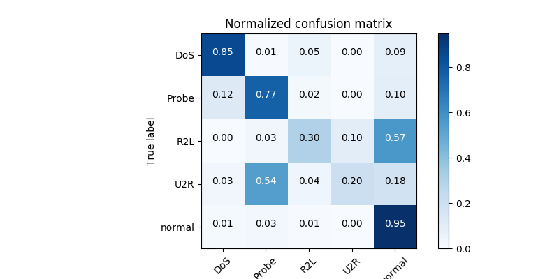
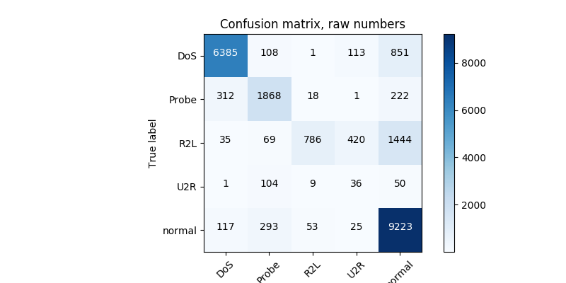

<!DOCTYPE html>
<!--[if IE 8]><html class="no-js lt-ie9" lang="en" > <![endif]-->
<!--[if gt IE 8]><!--> <html class="no-js" lang="en" > <!--<![endif]-->
<head>
  <meta charset="utf-8">
  
  <meta name="viewport" content="width=device-width, initial-scale=1.0">
  
  <title>Learning and inference on NSL-KDD &mdash; Akida Examples  documentation</title>
  

  
  
    <link rel="shortcut icon" href="../../_static/favicon.ico"/>
  
  
  

  
  <script type="text/javascript" src="../../_static/js/modernizr.min.js"></script>
  
    
      <script type="text/javascript" id="documentation_options" data-url_root="../../" src="../../_static/documentation_options.js"></script>
        <script type="text/javascript" src="../../_static/jquery.js"></script>
        <script type="text/javascript" src="../../_static/underscore.js"></script>
        <script type="text/javascript" src="../../_static/doctools.js"></script>
        <script type="text/javascript" src="../../_static/language_data.js"></script>
    
    <script type="text/javascript" src="../../_static/js/theme.js"></script>

    

  
  <link rel="stylesheet" href="../../_static/css/theme.css" type="text/css" />
  <link rel="stylesheet" href="../../_static/pygments.css" type="text/css" />
  <link rel="stylesheet" href="../../_static/gallery.css" type="text/css" />
    <link rel="index" title="Index" href="../../genindex.html" />
    <link rel="search" title="Search" href="../../search.html" />
    <link rel="next" title="Native learning for pattern detection" href="../unsupervised/plot_unsupervised_main.html" />
    <link rel="prev" title="Learning and inference on Characters DVS" href="plot_dvs_main.html" /> 
</head>

<body class="wy-body-for-nav">

   
  <div class="wy-grid-for-nav">
    
    <nav data-toggle="wy-nav-shift" class="wy-nav-side">
      <div class="wy-side-scroll">
        <div class="wy-side-nav-search"  style="background: #3f51b5" >
          

          
            <a href="../../index.html">
          

          
            
            
          
          </a>

          
            
            
              <div class="version">
                1.7.4
              </div>
            
          

          
<div role="search">
  <form id="rtd-search-form" class="wy-form" action="../../search.html" method="get">
    <input type="text" name="q" placeholder="Search docs" />
    <input type="hidden" name="check_keywords" value="yes" />
    <input type="hidden" name="area" value="default" />
  </form>
</div>

          
        </div>

        <div class="wy-menu wy-menu-vertical" data-spy="affix" role="navigation" aria-label="main navigation">
          
            
            
              
            
            
              <ul class="current">
<li class="toctree-l1"><a class="reference internal" href="../../index.html">Overview</a></li>
<li class="toctree-l1"><a class="reference internal" href="../../installation.html">Installation</a><ul>
<li class="toctree-l2"><a class="reference internal" href="../../installation.html#requirements">Requirements</a></li>
<li class="toctree-l2"><a class="reference internal" href="../../installation.html#quick-installation">Quick installation</a></li>
<li class="toctree-l2"><a class="reference internal" href="../../installation.html#running-examples">Running examples</a></li>
</ul>
</li>
<li class="toctree-l1"><a class="reference internal" href="../../user_guide/user_guide.html">User guide</a><ul>
<li class="toctree-l2"><a class="reference internal" href="../../user_guide/getting_started.html">Getting started</a><ul>
<li class="toctree-l3"><a class="reference internal" href="../../user_guide/getting_started.html#for-beginners">For beginners</a></li>
<li class="toctree-l3"><a class="reference internal" href="../../user_guide/getting_started.html#for-users-familiar-with-deep-learning">For users familiar with deep-learning</a></li>
</ul>
</li>
<li class="toctree-l2"><a class="reference internal" href="../../user_guide/aee.html">Akida user guide</a><ul>
<li class="toctree-l3"><a class="reference internal" href="../../user_guide/aee.html#the-akida-execution-engine">The Akida Execution Engine</a><ul>
<li class="toctree-l4"><a class="reference internal" href="../../user_guide/aee.html#id1">1. The Spiking Neural Network model</a></li>
<li class="toctree-l4"><a class="reference internal" href="../../user_guide/aee.html#id2">2. Input data format</a></li>
<li class="toctree-l4"><a class="reference internal" href="../../user_guide/aee.html#id3">3. Determine training mode</a></li>
<li class="toctree-l4"><a class="reference internal" href="../../user_guide/aee.html#id4">4. Interpreting outputs</a></li>
</ul>
</li>
<li class="toctree-l3"><a class="reference internal" href="../../user_guide/aee.html#neural-network-model">Neural Network model</a><ul>
<li class="toctree-l4"><a class="reference internal" href="../../user_guide/aee.html#specifying-the-neural-network-model">Specifying the Neural Network model</a></li>
<li class="toctree-l4"><a class="reference internal" href="../../user_guide/aee.html#saving-and-loading">Saving and loading</a></li>
<li class="toctree-l4"><a class="reference internal" href="../../user_guide/aee.html#input-layer-types">Input layer types</a></li>
<li class="toctree-l4"><a class="reference internal" href="../../user_guide/aee.html#data-processing-layer-types">Data-Processing layer types</a></li>
</ul>
</li>
<li class="toctree-l3"><a class="reference internal" href="../../user_guide/aee.html#id5">Using Akida Unsupervised Learning</a><ul>
<li class="toctree-l4"><a class="reference internal" href="../../user_guide/aee.html#learning-constraints">Learning constraints</a></li>
<li class="toctree-l4"><a class="reference internal" href="../../user_guide/aee.html#compiling-a-layer">Compiling a layer</a></li>
<li class="toctree-l4"><a class="reference internal" href="../../user_guide/aee.html#id7">Learning parameters</a></li>
</ul>
</li>
</ul>
</li>
<li class="toctree-l2"><a class="reference internal" href="../../user_guide/cnn2snn.html">CNN2SNN toolkit</a><ul>
<li class="toctree-l3"><a class="reference internal" href="../../user_guide/cnn2snn.html#overview">Overview</a><ul>
<li class="toctree-l4"><a class="reference internal" href="../../user_guide/cnn2snn.html#conversion-workflow">Conversion Workflow</a></li>
<li class="toctree-l4"><a class="reference internal" href="../../user_guide/cnn2snn.html#compatibility-constraints">Compatibility Constraints</a></li>
<li class="toctree-l4"><a class="reference internal" href="../../user_guide/cnn2snn.html#typical-training-scenario">Typical training scenario</a></li>
</ul>
</li>
<li class="toctree-l3"><a class="reference internal" href="../../user_guide/cnn2snn.html#layers-considerations">Layers Considerations</a><ul>
<li class="toctree-l4"><a class="reference internal" href="../../user_guide/cnn2snn.html#supported-layer-types">Supported layer types</a></li>
<li class="toctree-l4"><a class="reference internal" href="../../user_guide/cnn2snn.html#quantization-aware-layers">Quantization-aware layers</a></li>
<li class="toctree-l4"><a class="reference internal" href="../../user_guide/cnn2snn.html#training-only-layers">Training-Only Layers</a></li>
<li class="toctree-l4"><a class="reference internal" href="../../user_guide/cnn2snn.html#first-layers">First Layers</a></li>
<li class="toctree-l4"><a class="reference internal" href="../../user_guide/cnn2snn.html#id6">Final Layers</a></li>
</ul>
</li>
<li class="toctree-l3"><a class="reference internal" href="../../user_guide/cnn2snn.html#layer-blocks">Layer Blocks</a><ul>
<li class="toctree-l4"><a class="reference internal" href="../../user_guide/cnn2snn.html#id7">Overview</a></li>
<li class="toctree-l4"><a class="reference internal" href="../../user_guide/cnn2snn.html#conv-block"><code class="docutils literal notranslate"><span class="pre">conv_block</span></code></a></li>
<li class="toctree-l4"><a class="reference internal" href="../../user_guide/cnn2snn.html#dense-block"><code class="docutils literal notranslate"><span class="pre">dense_block</span></code></a></li>
<li class="toctree-l4"><a class="reference internal" href="../../user_guide/cnn2snn.html#separable-conv-block"><code class="docutils literal notranslate"><span class="pre">separable_conv_block</span></code></a></li>
</ul>
</li>
<li class="toctree-l3"><a class="reference internal" href="../../user_guide/cnn2snn.html#tips-and-tricks">Tips and Tricks</a></li>
</ul>
</li>
<li class="toctree-l2"><a class="reference internal" href="../../user_guide/hw_constraints.html">Hardware constraints</a><ul>
<li class="toctree-l3"><a class="reference internal" href="../../user_guide/hw_constraints.html#input-layer">Input layer</a></li>
<li class="toctree-l3"><a class="reference internal" href="../../user_guide/hw_constraints.html#data-processing-layers">Data-Processing layers</a><ul>
<li class="toctree-l4"><a class="reference internal" href="../../user_guide/hw_constraints.html#convolutional-layer">Convolutional layer</a></li>
<li class="toctree-l4"><a class="reference internal" href="../../user_guide/hw_constraints.html#fully-connected-layer">Fully connected layer</a></li>
</ul>
</li>
</ul>
</li>
</ul>
</li>
<li class="toctree-l1"><a class="reference internal" href="../../api_reference/api_reference.html">API reference</a><ul>
<li class="toctree-l2"><a class="reference internal" href="../../api_reference/aee_apis.html">Akida Execution Engine</a><ul>
<li class="toctree-l3"><a class="reference internal" href="../../api_reference/aee_apis.html#model">Model</a></li>
<li class="toctree-l3"><a class="reference internal" href="../../api_reference/aee_apis.html#layer">Layer</a></li>
<li class="toctree-l3"><a class="reference internal" href="../../api_reference/aee_apis.html#layerstatistics">LayerStatistics</a></li>
<li class="toctree-l3"><a class="reference internal" href="../../api_reference/aee_apis.html#observer">Observer</a></li>
<li class="toctree-l3"><a class="reference internal" href="../../api_reference/aee_apis.html#inputdata">InputData</a></li>
<li class="toctree-l3"><a class="reference internal" href="../../api_reference/aee_apis.html#inputconvolutional">InputConvolutional</a></li>
<li class="toctree-l3"><a class="reference internal" href="../../api_reference/aee_apis.html#inputbcspike">InputBCSpike</a></li>
<li class="toctree-l3"><a class="reference internal" href="../../api_reference/aee_apis.html#fullyconnected">FullyConnected</a></li>
<li class="toctree-l3"><a class="reference internal" href="../../api_reference/aee_apis.html#convolutional">Convolutional</a></li>
<li class="toctree-l3"><a class="reference internal" href="../../api_reference/aee_apis.html#separableconvolutional">SeparableConvolutional</a></li>
<li class="toctree-l3"><a class="reference internal" href="../../api_reference/aee_apis.html#tensor">Tensor</a></li>
<li class="toctree-l3"><a class="reference internal" href="../../api_reference/aee_apis.html#sparse">Sparse</a></li>
<li class="toctree-l3"><a class="reference internal" href="../../api_reference/aee_apis.html#coords-to-sparse">coords_to_sparse</a></li>
<li class="toctree-l3"><a class="reference internal" href="../../api_reference/aee_apis.html#dense-to-sparse">dense_to_sparse</a></li>
<li class="toctree-l3"><a class="reference internal" href="../../api_reference/aee_apis.html#backendtype">BackendType</a></li>
<li class="toctree-l3"><a class="reference internal" href="../../api_reference/aee_apis.html#convolutionmode">ConvolutionMode</a></li>
<li class="toctree-l3"><a class="reference internal" href="../../api_reference/aee_apis.html#poolingtype">PoolingType</a></li>
<li class="toctree-l3"><a class="reference internal" href="../../api_reference/aee_apis.html#learningtype">LearningType</a></li>
</ul>
</li>
<li class="toctree-l2"><a class="reference internal" href="../../api_reference/cnn2snn_apis.html">CNN2SNN</a><ul>
<li class="toctree-l3"><a class="reference internal" href="../../api_reference/cnn2snn_apis.html#convert">convert</a></li>
<li class="toctree-l3"><a class="reference internal" href="../../api_reference/cnn2snn_apis.html#check-model-compatibility">check_model_compatibility</a></li>
<li class="toctree-l3"><a class="reference internal" href="../../api_reference/cnn2snn_apis.html#weightquantizer">WeightQuantizer</a></li>
<li class="toctree-l3"><a class="reference internal" href="../../api_reference/cnn2snn_apis.html#weightfloat">WeightFloat</a></li>
<li class="toctree-l3"><a class="reference internal" href="../../api_reference/cnn2snn_apis.html#quantizedconv2d">QuantizedConv2D</a></li>
<li class="toctree-l3"><a class="reference internal" href="../../api_reference/cnn2snn_apis.html#quantizeddepthwiseconv2d">QuantizedDepthwiseConv2D</a></li>
<li class="toctree-l3"><a class="reference internal" href="../../api_reference/cnn2snn_apis.html#quantizeddense">QuantizedDense</a></li>
<li class="toctree-l3"><a class="reference internal" href="../../api_reference/cnn2snn_apis.html#quantizedseparableconv2d">QuantizedSeparableConv2D</a></li>
<li class="toctree-l3"><a class="reference internal" href="../../api_reference/cnn2snn_apis.html#activationdiscreterelu">ActivationDiscreteRelu</a></li>
</ul>
</li>
<li class="toctree-l2"><a class="reference internal" href="../../api_reference/akida_models_apis.html">Akida models</a><ul>
<li class="toctree-l3"><a class="reference internal" href="../../api_reference/akida_models_apis.html#quantization-blocks">Quantization blocks</a><ul>
<li class="toctree-l4"><a class="reference internal" href="../../api_reference/akida_models_apis.html#conv-block">conv_block</a></li>
<li class="toctree-l4"><a class="reference internal" href="../../api_reference/akida_models_apis.html#separable-conv-block">separable_conv_block</a></li>
<li class="toctree-l4"><a class="reference internal" href="../../api_reference/akida_models_apis.html#dense-block">dense_block</a></li>
</ul>
</li>
<li class="toctree-l3"><a class="reference internal" href="../../api_reference/akida_models_apis.html#model-zoo">Model zoo</a><ul>
<li class="toctree-l4"><a class="reference internal" href="../../api_reference/akida_models_apis.html#mobilenet">Mobilenet</a></li>
<li class="toctree-l4"><a class="reference internal" href="../../api_reference/akida_models_apis.html#vgg">VGG</a></li>
</ul>
</li>
</ul>
</li>
</ul>
</li>
<li class="toctree-l1 current"><a class="reference internal" href="../index.html">Examples</a><ul class="current">
<li class="toctree-l2"><a class="reference internal" href="../index.html#cnn2snn">CNN2SNN</a><ul>
<li class="toctree-l3"><a class="reference internal" href="../cnn2snn/plot_mnist_cnn2akida_main.html">Inference on MNIST</a><ul>
<li class="toctree-l4"><a class="reference internal" href="../cnn2snn/plot_mnist_cnn2akida_main.html#loading-the-mnist-dataset">1. Loading the MNIST dataset</a></li>
<li class="toctree-l4"><a class="reference internal" href="../cnn2snn/plot_mnist_cnn2akida_main.html#look-at-some-images-from-the-test-dataset">2. Look at some images from the test dataset</a></li>
<li class="toctree-l4"><a class="reference internal" href="../cnn2snn/plot_mnist_cnn2akida_main.html#load-the-pre-trained-akida-model">3. Load the pre-trained Akida model</a></li>
<li class="toctree-l4"><a class="reference internal" href="../cnn2snn/plot_mnist_cnn2akida_main.html#classify-a-single-image">4. Classify a single image</a></li>
<li class="toctree-l4"><a class="reference internal" href="../cnn2snn/plot_mnist_cnn2akida_main.html#check-performance-across-a-number-of-samples">5. Check performance across a number of samples</a></li>
</ul>
</li>
<li class="toctree-l3"><a class="reference internal" href="../cnn2snn/plot_mobilenet_kws.html">Inference on KWS with MobileNet</a><ul>
<li class="toctree-l4"><a class="reference internal" href="../cnn2snn/plot_mobilenet_kws.html#load-cnn2snn-tool-dependencies">1. Load CNN2SNN tool dependencies</a></li>
<li class="toctree-l4"><a class="reference internal" href="../cnn2snn/plot_mobilenet_kws.html#load-the-preprocessed-dataset">2. Load the preprocessed dataset</a></li>
<li class="toctree-l4"><a class="reference internal" href="../cnn2snn/plot_mobilenet_kws.html#create-a-keras-model-satisfying-akida-nsoc-requirements">3. Create a Keras model satisfying Akida NSoC requirements</a></li>
<li class="toctree-l4"><a class="reference internal" href="../cnn2snn/plot_mobilenet_kws.html#check-performance">4. Check performance</a></li>
<li class="toctree-l4"><a class="reference internal" href="../cnn2snn/plot_mobilenet_kws.html#conversion-to-akida">5. Conversion to Akida</a></li>
</ul>
</li>
<li class="toctree-l3"><a class="reference internal" href="../cnn2snn/plot_cifar10_cnn2akida_demo.html">Inference on CIFAR10 with VGG and MobileNet</a><ul>
<li class="toctree-l4"><a class="reference internal" href="../cnn2snn/plot_cifar10_cnn2akida_demo.html#load-cnn2snn-tool-dependencies">1. Load CNN2SNN tool dependencies</a></li>
<li class="toctree-l4"><a class="reference internal" href="../cnn2snn/plot_cifar10_cnn2akida_demo.html#load-and-reshape-cifar10-dataset">2. Load and reshape CIFAR10 dataset</a></li>
<li class="toctree-l4"><a class="reference internal" href="../cnn2snn/plot_cifar10_cnn2akida_demo.html#create-a-quantized-keras-vgg-model">3. Create a quantized Keras VGG model</a></li>
<li class="toctree-l4"><a class="reference internal" href="../cnn2snn/plot_cifar10_cnn2akida_demo.html#conversion-to-akida">4. Conversion to Akida</a></li>
<li class="toctree-l4"><a class="reference internal" href="../cnn2snn/plot_cifar10_cnn2akida_demo.html#create-a-quantized-keras-mobilenet-model">5. Create a quantized Keras MobileNet model</a></li>
<li class="toctree-l4"><a class="reference internal" href="../cnn2snn/plot_cifar10_cnn2akida_demo.html#id2">6. Conversion to Akida</a></li>
</ul>
</li>
<li class="toctree-l3"><a class="reference internal" href="../cnn2snn/plot_cats_vs_dogs_cnn2akida_demo.html">Transfer learning with MobileNet for cats vs. dogs</a><ul>
<li class="toctree-l4"><a class="reference internal" href="../cnn2snn/plot_cats_vs_dogs_cnn2akida_demo.html#transfer-learning-process">1. Transfer learning process</a></li>
<li class="toctree-l4"><a class="reference internal" href="../cnn2snn/plot_cats_vs_dogs_cnn2akida_demo.html#load-and-preprocess-data">2. Load and preprocess data</a></li>
<li class="toctree-l4"><a class="reference internal" href="../cnn2snn/plot_cats_vs_dogs_cnn2akida_demo.html#convert-a-quantized-keras-model-to-akida">3. Convert a quantized Keras model to Akida</a></li>
<li class="toctree-l4"><a class="reference internal" href="../cnn2snn/plot_cats_vs_dogs_cnn2akida_demo.html#classify-test-images">4. Classify test images</a></li>
</ul>
</li>
<li class="toctree-l3"><a class="reference internal" href="../cnn2snn/plot_mobilenet_imagenet.html">Inference on ImageNet with MobileNet</a><ul>
<li class="toctree-l4"><a class="reference internal" href="../cnn2snn/plot_mobilenet_imagenet.html#load-cnn2snn-tool-dependencies">1. Load CNN2SNN tool dependencies</a></li>
<li class="toctree-l4"><a class="reference internal" href="../cnn2snn/plot_mobilenet_imagenet.html#load-test-images-from-imagenet">2. Load test images from ImageNet</a></li>
<li class="toctree-l4"><a class="reference internal" href="../cnn2snn/plot_mobilenet_imagenet.html#create-a-quantized-keras-model">3. Create a quantized Keras model</a></li>
<li class="toctree-l4"><a class="reference internal" href="../cnn2snn/plot_mobilenet_imagenet.html#convert-keras-model-for-akida-nsoc">4. Convert Keras model for Akida NSoC</a></li>
</ul>
</li>
<li class="toctree-l3"><a class="reference internal" href="../cnn2snn/plot_mnist_cnn2akida_demo.html">CNN conversion flow tutorial for MNIST</a><ul>
<li class="toctree-l4"><a class="reference internal" href="../cnn2snn/plot_mnist_cnn2akida_demo.html#system-configuration">1. System configuration</a></li>
<li class="toctree-l4"><a class="reference internal" href="../cnn2snn/plot_mnist_cnn2akida_demo.html#model-creation-and-performance-check">2. Model creation and performance check</a></li>
<li class="toctree-l4"><a class="reference internal" href="../cnn2snn/plot_mnist_cnn2akida_demo.html#model-akida-compatibility-check-and-changes">3. Model Akida-compatibility check and changes</a></li>
<li class="toctree-l4"><a class="reference internal" href="../cnn2snn/plot_mnist_cnn2akida_demo.html#model-quantization-and-training">4. Model quantization and training</a></li>
<li class="toctree-l4"><a class="reference internal" href="../cnn2snn/plot_mnist_cnn2akida_demo.html#convert-trained-model-for-akida-and-test">5. Convert trained model for Akida and test</a></li>
</ul>
</li>
</ul>
</li>
<li class="toctree-l2 current"><a class="reference internal" href="../index.html#semisupervised">Semisupervised</a><ul class="current">
<li class="toctree-l3"><a class="reference internal" href="plot_mnist_main.html">Learning and inference on MNIST</a><ul>
<li class="toctree-l4"><a class="reference internal" href="plot_mnist_main.html#loading-the-mnist-dataset">1. Loading the MNIST dataset</a></li>
<li class="toctree-l4"><a class="reference internal" href="plot_mnist_main.html#look-at-some-images-from-the-dataset">2. Look at some images from the dataset</a></li>
<li class="toctree-l4"><a class="reference internal" href="plot_mnist_main.html#configuring-akida-model">3. Configuring Akida model</a></li>
<li class="toctree-l4"><a class="reference internal" href="plot_mnist_main.html#testing-performance">4. Testing performance</a></li>
<li class="toctree-l4"><a class="reference internal" href="plot_mnist_main.html#learning-and-inference">5. Learning and inference</a></li>
</ul>
</li>
<li class="toctree-l3"><a class="reference internal" href="plot_dvs_main.html">Learning and inference on Characters DVS</a><ul>
<li class="toctree-l4"><a class="reference internal" href="plot_dvs_main.html#loading-the-characters-dvs-dataset">1. Loading the Characters DVS dataset</a></li>
<li class="toctree-l4"><a class="reference internal" href="plot_dvs_main.html#look-at-some-events-from-the-dataset">2. Look at some events from the dataset</a></li>
<li class="toctree-l4"><a class="reference internal" href="plot_dvs_main.html#configuring-akida-model">3. Configuring Akida model</a></li>
<li class="toctree-l4"><a class="reference internal" href="plot_dvs_main.html#learning-and-inference">4. Learning and inference</a></li>
<li class="toctree-l4"><a class="reference internal" href="plot_dvs_main.html#unsupervised-learning-with-supervised-classification">5. Unsupervised learning with supervised classification</a></li>
</ul>
</li>
<li class="toctree-l3 current"><a class="current reference internal" href="#">Learning and inference on NSL-KDD</a><ul>
<li class="toctree-l4"><a class="reference internal" href="#download-and-prepare-the-nsl-kdd-dataset">1. Download and prepare the NSL-KDD dataset</a></li>
<li class="toctree-l4"><a class="reference internal" href="#sneak-peek-of-the-input-tabular-data">2. Sneak peek of the input tabular data</a></li>
<li class="toctree-l4"><a class="reference internal" href="#convert-from-tabular-to-binary-data">3. Convert from tabular to binary data</a></li>
<li class="toctree-l4"><a class="reference internal" href="#oversampling-the-training-data-to-cope-with-imbalanced-dataset">4. Oversampling the training data to cope with imbalanced dataset</a></li>
<li class="toctree-l4"><a class="reference internal" href="#configuring-akida-model">5. Configuring Akida model</a></li>
<li class="toctree-l4"><a class="reference internal" href="#learning-and-inference">6. Learning and inference</a></li>
<li class="toctree-l4"><a class="reference internal" href="#display-results">7. Display results</a></li>
</ul>
</li>
</ul>
</li>
<li class="toctree-l2"><a class="reference internal" href="../index.html#unsupervised">Unsupervised</a><ul>
<li class="toctree-l3"><a class="reference internal" href="../unsupervised/plot_unsupervised_main.html">Native learning for pattern detection</a><ul>
<li class="toctree-l4"><a class="reference internal" href="../unsupervised/plot_unsupervised_main.html#creating-the-dataset">1. Creating the dataset</a></li>
<li class="toctree-l4"><a class="reference internal" href="../unsupervised/plot_unsupervised_main.html#creating-random-dot-images">2. Creating random dot images</a></li>
<li class="toctree-l4"><a class="reference internal" href="../unsupervised/plot_unsupervised_main.html#take-a-look-at-some-of-the-random-dots-images">3. Take a look at some of the random dots images</a></li>
<li class="toctree-l4"><a class="reference internal" href="../unsupervised/plot_unsupervised_main.html#configuring-the-akida-model">4. Configuring the Akida model</a></li>
<li class="toctree-l4"><a class="reference internal" href="../unsupervised/plot_unsupervised_main.html#do-the-learning">5. Do the learning</a></li>
<li class="toctree-l4"><a class="reference internal" href="../unsupervised/plot_unsupervised_main.html#test-the-performance">6. Test the performance</a></li>
</ul>
</li>
</ul>
</li>
</ul>
</li>
<li class="toctree-l1"><a class="reference external" href="https://support.brainchip.com/portal/home">Support</a></li>
<li class="toctree-l1"><a class="reference internal" href="../../license.html">License</a></li>
</ul>

            
          
        </div>
      </div>
    </nav>

    <section data-toggle="wy-nav-shift" class="wy-nav-content-wrap">

      
      <nav class="wy-nav-top" aria-label="top navigation">
        
          <i data-toggle="wy-nav-top" class="fa fa-bars"></i>
          <a href="../../index.html">Akida Examples</a>
        
      </nav>


      <div class="wy-nav-content">
        
        <div class="rst-content">
        
          


<div role="navigation" aria-label="breadcrumbs navigation">

  <ul class="wy-breadcrumbs">
    
      <li><a href="../../index.html">Docs</a> &raquo;</li>
        
          <li><a href="../index.html">Akida examples</a> &raquo;</li>
        
      <li>Learning and inference on NSL-KDD</li>
    
    
      <li class="wy-breadcrumbs-aside">
        
            
        
      </li>
    
  </ul>

  
  <hr/>
</div>
          <div role="main" class="document" itemscope="itemscope" itemtype="http://schema.org/Article">
           <div itemprop="articleBody">
            
  <div class="sphx-glr-download-link-note admonition note">
<p class="admonition-title">Note</p>
<p>Click <a class="reference internal" href="#sphx-glr-download-examples-semisupervised-plot-nslkdd-main-py"><span class="std std-ref">here</span></a> to download the full example code</p>
</div>
<div class="sphx-glr-example-title section" id="learning-and-inference-on-nsl-kdd">
<span id="sphx-glr-examples-semisupervised-plot-nslkdd-main-py"></span><h1>Learning and inference on NSL-KDD<a class="headerlink" href="#learning-and-inference-on-nsl-kdd" title="Permalink to this headline">¶</a></h1>
<p>The NSL-KDD dataset is an improvement over the KDD’99 provided by the Canadian
Institute for Cybersecurity.</p>
<p>From their <a class="reference external" href="https://www.unb.ca/cic/datasets/nsl.html">webpage</a>:</p>
<blockquote>
<div><p><em>NSL-KDD is a data set suggested to solve some of
the inherent problems of the KDD’99 data set which are mentioned in [1].
Although, this new version of the KDD data set still suffers from some
of the problems discussed by McHugh and may not be a perfect
representative of existing real networks, because of the lack of public
data sets for network-based IDSs, we believe it still can be applied as
an effective benchmark data set to help researchers compare different
intrusion detection methods.</em></p>
<p><em>Furthermore, the number of records in the
NSL-KDD train and test sets are reasonable. This advantage makes it
affordable to run the experiments on the complete set without the need
to randomly select a small portion. Consequently, evaluation results of
different research work will be consistent and comparable.</em></p>
<p><em>[1] M. Tavallaee, E. Bagheri, W. Lu, and A. Ghorbani, “A Detailed Analysis
of the KDD CUP 99 Data Set,” Submitted to Second IEEE Symposium on
Computational Intelligence for Security and Defense Applications
(CISDA), 2009.</em></p>
</div></blockquote>
<p>This tutorial is a demonstration of how to use the Akida Execution
Engine to classify connexions into 5 classes: normal activity and 4
different groups of attacks (DoS, U2R, R2L and probe).</p>
<div class="section" id="download-and-prepare-the-nsl-kdd-dataset">
<h2>1. Download and prepare the NSL-KDD dataset<a class="headerlink" href="#download-and-prepare-the-nsl-kdd-dataset" title="Permalink to this headline">¶</a></h2>
<div class="highlight-default notranslate"><div class="highlight"><pre><span></span><span class="c1"># Various imports needed for the tutorial</span>
<span class="kn">import</span> <span class="nn">os</span><span class="o">,</span> <span class="nn">sys</span><span class="o">,</span> <span class="nn">time</span>
<span class="kn">import</span> <span class="nn">pandas</span> <span class="k">as</span> <span class="nn">pd</span>
<span class="kn">import</span> <span class="nn">numpy</span> <span class="k">as</span> <span class="nn">np</span>
<span class="kn">import</span> <span class="nn">matplotlib.pyplot</span> <span class="k">as</span> <span class="nn">plt</span>
<span class="kn">import</span> <span class="nn">pickle</span>
<span class="kn">import</span> <span class="nn">itertools</span>
<span class="kn">import</span> <span class="nn">matplotlib.pyplot</span> <span class="k">as</span> <span class="nn">plt</span>
<span class="kn">from</span> <span class="nn">tensorflow.keras.utils</span> <span class="kn">import</span> <span class="n">get_file</span>
<span class="kn">from</span> <span class="nn">sklearn</span> <span class="kn">import</span> <span class="n">preprocessing</span>
<span class="kn">from</span> <span class="nn">sklearn.utils</span> <span class="kn">import</span> <span class="n">shuffle</span>

<span class="c1"># Akida specific imports</span>
<span class="kn">from</span> <span class="nn">akida</span> <span class="kn">import</span> <span class="n">Model</span><span class="p">,</span> <span class="n">InputData</span><span class="p">,</span> <span class="n">FullyConnected</span><span class="p">,</span> <span class="n">LearningType</span><span class="p">,</span> <span class="n">dense_to_sparse</span>

<span class="c1"># Cybersecurity specific imports</span>
<span class="kn">from</span> <span class="nn">progressbar</span> <span class="kn">import</span> <span class="n">ProgressBar</span>
<span class="kn">from</span> <span class="nn">sklearn.metrics</span> <span class="kn">import</span> <span class="n">confusion_matrix</span><span class="p">,</span> <span class="n">f1_score</span><span class="p">,</span> <span class="n">precision_score</span><span class="p">,</span> \
    <span class="n">recall_score</span><span class="p">,</span> <span class="n">accuracy_score</span>
</pre></div>
</div>
<div class="highlight-default notranslate"><div class="highlight"><pre><span></span><span class="c1"># Retrieve NSLKDD dataset</span>
<span class="n">file_path</span> <span class="o">=</span> <span class="n">get_file</span><span class="p">(</span><span class="s1">&#39;NSL-KDD.zip&#39;</span><span class="p">,</span> <span class="s1">&#39;https://iscxdownloads.cs.unb.ca/iscxdownloads/NSL-KDD/NSL-KDD.zip&#39;</span><span class="p">,</span> <span class="n">cache_subdir</span><span class="o">=</span><span class="s1">&#39;datasets/NSL-KDD&#39;</span><span class="p">,</span> <span class="n">extract</span><span class="o">=</span><span class="kc">True</span><span class="p">)</span>
<span class="n">working_dir</span> <span class="o">=</span> <span class="n">os</span><span class="o">.</span><span class="n">path</span><span class="o">.</span><span class="n">dirname</span><span class="p">(</span><span class="n">file_path</span><span class="p">)</span>
</pre></div>
</div>
<p class="sphx-glr-script-out">Out:</p>
<div class="sphx-glr-script-out highlight-none notranslate"><div class="highlight"><pre><span></span>Downloading data from https://iscxdownloads.cs.unb.ca/iscxdownloads/NSL-KDD/NSL-KDD.zip

   8192/6598776 [..............................] - ETA: 1:40
  40960/6598776 [..............................] - ETA: 39s 
  90112/6598776 [..............................] - ETA: 27s
 188416/6598776 [..............................] - ETA: 17s
 401408/6598776 [&gt;.............................] - ETA: 9s 
 827392/6598776 [==&gt;...........................] - ETA: 5s
1662976/6598776 [======&gt;.......................] - ETA: 2s
2842624/6598776 [===========&gt;..................] - ETA: 1s
2859008/6598776 [===========&gt;..................] - ETA: 1s
3186688/6598776 [=============&gt;................] - ETA: 1s
5988352/6598776 [==========================&gt;...] - ETA: 0s
6602752/6598776 [==============================] - 1s 0us/step
</pre></div>
</div>
<div class="highlight-default notranslate"><div class="highlight"><pre><span></span><span class="c1"># Define data set column names</span>
<span class="n">col_names</span> <span class="o">=</span> <span class="n">np</span><span class="o">.</span><span class="n">array</span><span class="p">([</span><span class="s2">&quot;duration&quot;</span><span class="p">,</span><span class="s2">&quot;protocol_type&quot;</span><span class="p">,</span><span class="s2">&quot;service&quot;</span><span class="p">,</span><span class="s2">&quot;flag&quot;</span><span class="p">,</span><span class="s2">&quot;src_bytes&quot;</span><span class="p">,</span>
    <span class="s2">&quot;dst_bytes&quot;</span><span class="p">,</span><span class="s2">&quot;land&quot;</span><span class="p">,</span><span class="s2">&quot;wrong_fragment&quot;</span><span class="p">,</span><span class="s2">&quot;urgent&quot;</span><span class="p">,</span><span class="s2">&quot;hot&quot;</span><span class="p">,</span><span class="s2">&quot;num_failed_logins&quot;</span><span class="p">,</span>
    <span class="s2">&quot;logged_in&quot;</span><span class="p">,</span><span class="s2">&quot;num_compromised&quot;</span><span class="p">,</span><span class="s2">&quot;root_shell&quot;</span><span class="p">,</span><span class="s2">&quot;su_attempted&quot;</span><span class="p">,</span><span class="s2">&quot;num_root&quot;</span><span class="p">,</span>
    <span class="s2">&quot;num_file_creations&quot;</span><span class="p">,</span><span class="s2">&quot;num_shells&quot;</span><span class="p">,</span><span class="s2">&quot;num_access_files&quot;</span><span class="p">,</span><span class="s2">&quot;num_outbound_cmds&quot;</span><span class="p">,</span>
    <span class="s2">&quot;is_host_login&quot;</span><span class="p">,</span><span class="s2">&quot;is_guest_login&quot;</span><span class="p">,</span><span class="s2">&quot;count&quot;</span><span class="p">,</span><span class="s2">&quot;srv_count&quot;</span><span class="p">,</span><span class="s2">&quot;serror_rate&quot;</span><span class="p">,</span>
    <span class="s2">&quot;srv_serror_rate&quot;</span><span class="p">,</span><span class="s2">&quot;rerror_rate&quot;</span><span class="p">,</span><span class="s2">&quot;srv_rerror_rate&quot;</span><span class="p">,</span><span class="s2">&quot;same_srv_rate&quot;</span><span class="p">,</span>
    <span class="s2">&quot;diff_srv_rate&quot;</span><span class="p">,</span><span class="s2">&quot;srv_diff_host_rate&quot;</span><span class="p">,</span><span class="s2">&quot;dst_host_count&quot;</span><span class="p">,</span><span class="s2">&quot;dst_host_srv_count&quot;</span><span class="p">,</span>
    <span class="s2">&quot;dst_host_same_srv_rate&quot;</span><span class="p">,</span><span class="s2">&quot;dst_host_diff_srv_rate&quot;</span><span class="p">,</span><span class="s2">&quot;dst_host_same_src_port_rate&quot;</span><span class="p">,</span>
    <span class="s2">&quot;dst_host_srv_diff_host_rate&quot;</span><span class="p">,</span><span class="s2">&quot;dst_host_serror_rate&quot;</span><span class="p">,</span><span class="s2">&quot;dst_host_srv_serror_rate&quot;</span><span class="p">,</span>
    <span class="s2">&quot;dst_host_rerror_rate&quot;</span><span class="p">,</span><span class="s2">&quot;dst_host_srv_rerror_rate&quot;</span><span class="p">,</span><span class="s2">&quot;label&quot;</span><span class="p">])</span>
</pre></div>
</div>
<div class="highlight-default notranslate"><div class="highlight"><pre><span></span><span class="c1"># Funtion used to prepare the NSL-KDD dataset</span>
<span class="k">def</span> <span class="nf">data_prep_NSLKDD</span><span class="p">(</span><span class="n">data</span><span class="p">):</span>
    <span class="sd">&quot;&quot;&quot;</span>
<span class="sd">    Rename group original attack names in 4 categories: DoS, Probe, R2L, U2R</span>
<span class="sd">    Perform LabelEncoding() on the label column (convert strings to numbers)</span>
<span class="sd">    Remove features/columns with a cardinality of 1 (= all cells are identical)</span>

<span class="sd">    Args:</span>
<span class="sd">        data: NSLKDD dataset</span>
<span class="sd">    &quot;&quot;&quot;</span>
    <span class="c1"># Dictionary that contains mapping of various attacks to the four main</span>
    <span class="c1"># categories</span>
    <span class="n">attack_dict</span> <span class="o">=</span> <span class="p">{</span>
        <span class="s1">&#39;normal&#39;</span><span class="p">:</span> <span class="s1">&#39;normal&#39;</span><span class="p">,</span>

        <span class="s1">&#39;back&#39;</span><span class="p">:</span> <span class="s1">&#39;DoS&#39;</span><span class="p">,</span>
        <span class="s1">&#39;land&#39;</span><span class="p">:</span> <span class="s1">&#39;DoS&#39;</span><span class="p">,</span>
        <span class="s1">&#39;neptune&#39;</span><span class="p">:</span> <span class="s1">&#39;DoS&#39;</span><span class="p">,</span>
        <span class="s1">&#39;pod&#39;</span><span class="p">:</span> <span class="s1">&#39;DoS&#39;</span><span class="p">,</span>
        <span class="s1">&#39;smurf&#39;</span><span class="p">:</span> <span class="s1">&#39;DoS&#39;</span><span class="p">,</span>
        <span class="s1">&#39;teardrop&#39;</span><span class="p">:</span> <span class="s1">&#39;DoS&#39;</span><span class="p">,</span>
        <span class="s1">&#39;mailbomb&#39;</span><span class="p">:</span> <span class="s1">&#39;DoS&#39;</span><span class="p">,</span>
        <span class="s1">&#39;apache2&#39;</span><span class="p">:</span> <span class="s1">&#39;DoS&#39;</span><span class="p">,</span>
        <span class="s1">&#39;processtable&#39;</span><span class="p">:</span> <span class="s1">&#39;DoS&#39;</span><span class="p">,</span>
        <span class="s1">&#39;udpstorm&#39;</span><span class="p">:</span> <span class="s1">&#39;DoS&#39;</span><span class="p">,</span>

        <span class="s1">&#39;ipsweep&#39;</span><span class="p">:</span> <span class="s1">&#39;Probe&#39;</span><span class="p">,</span>
        <span class="s1">&#39;nmap&#39;</span><span class="p">:</span> <span class="s1">&#39;Probe&#39;</span><span class="p">,</span>
        <span class="s1">&#39;portsweep&#39;</span><span class="p">:</span> <span class="s1">&#39;Probe&#39;</span><span class="p">,</span>
        <span class="s1">&#39;satan&#39;</span><span class="p">:</span> <span class="s1">&#39;Probe&#39;</span><span class="p">,</span>
        <span class="s1">&#39;mscan&#39;</span><span class="p">:</span> <span class="s1">&#39;Probe&#39;</span><span class="p">,</span>
        <span class="s1">&#39;saint&#39;</span><span class="p">:</span> <span class="s1">&#39;Probe&#39;</span><span class="p">,</span>

        <span class="s1">&#39;ftp_write&#39;</span><span class="p">:</span> <span class="s1">&#39;R2L&#39;</span><span class="p">,</span>
        <span class="s1">&#39;guess_passwd&#39;</span><span class="p">:</span> <span class="s1">&#39;R2L&#39;</span><span class="p">,</span>
        <span class="s1">&#39;imap&#39;</span><span class="p">:</span> <span class="s1">&#39;R2L&#39;</span><span class="p">,</span>
        <span class="s1">&#39;multihop&#39;</span><span class="p">:</span> <span class="s1">&#39;R2L&#39;</span><span class="p">,</span>
        <span class="s1">&#39;phf&#39;</span><span class="p">:</span> <span class="s1">&#39;R2L&#39;</span><span class="p">,</span>
        <span class="s1">&#39;spy&#39;</span><span class="p">:</span> <span class="s1">&#39;R2L&#39;</span><span class="p">,</span>
        <span class="s1">&#39;warezclient&#39;</span><span class="p">:</span> <span class="s1">&#39;R2L&#39;</span><span class="p">,</span>
        <span class="s1">&#39;warezmaster&#39;</span><span class="p">:</span> <span class="s1">&#39;R2L&#39;</span><span class="p">,</span>
        <span class="s1">&#39;sendmail&#39;</span><span class="p">:</span> <span class="s1">&#39;R2L&#39;</span><span class="p">,</span>
        <span class="s1">&#39;named&#39;</span><span class="p">:</span> <span class="s1">&#39;R2L&#39;</span><span class="p">,</span>
        <span class="s1">&#39;snmpgetattack&#39;</span><span class="p">:</span> <span class="s1">&#39;R2L&#39;</span><span class="p">,</span>
        <span class="s1">&#39;snmpguess&#39;</span><span class="p">:</span> <span class="s1">&#39;R2L&#39;</span><span class="p">,</span>
        <span class="s1">&#39;xlock&#39;</span><span class="p">:</span> <span class="s1">&#39;R2L&#39;</span><span class="p">,</span>
        <span class="s1">&#39;xsnoop&#39;</span><span class="p">:</span> <span class="s1">&#39;R2L&#39;</span><span class="p">,</span>
        <span class="s1">&#39;worm&#39;</span><span class="p">:</span> <span class="s1">&#39;R2L&#39;</span><span class="p">,</span>

        <span class="s1">&#39;buffer_overflow&#39;</span><span class="p">:</span> <span class="s1">&#39;U2R&#39;</span><span class="p">,</span>
        <span class="s1">&#39;loadmodule&#39;</span><span class="p">:</span> <span class="s1">&#39;U2R&#39;</span><span class="p">,</span>
        <span class="s1">&#39;perl&#39;</span><span class="p">:</span> <span class="s1">&#39;U2R&#39;</span><span class="p">,</span>
        <span class="s1">&#39;rootkit&#39;</span><span class="p">:</span> <span class="s1">&#39;U2R&#39;</span><span class="p">,</span>
        <span class="s1">&#39;httptunnel&#39;</span><span class="p">:</span> <span class="s1">&#39;U2R&#39;</span><span class="p">,</span>
        <span class="s1">&#39;ps&#39;</span><span class="p">:</span> <span class="s1">&#39;U2R&#39;</span><span class="p">,</span>
        <span class="s1">&#39;sqlattack&#39;</span><span class="p">:</span> <span class="s1">&#39;U2R&#39;</span><span class="p">,</span>
        <span class="s1">&#39;xterm&#39;</span><span class="p">:</span> <span class="s1">&#39;U2R&#39;</span>
    <span class="p">}</span>
    <span class="n">data</span><span class="p">[</span><span class="s2">&quot;label&quot;</span><span class="p">]</span><span class="o">.</span><span class="n">replace</span><span class="p">(</span><span class="n">attack_dict</span><span class="p">,</span> <span class="n">inplace</span><span class="o">=</span><span class="kc">True</span><span class="p">)</span>

    <span class="c1"># Label encoding</span>
    <span class="n">le</span> <span class="o">=</span> <span class="n">preprocessing</span><span class="o">.</span><span class="n">LabelEncoder</span><span class="p">()</span>
    <span class="n">data</span><span class="p">[</span><span class="s1">&#39;label&#39;</span><span class="p">]</span> <span class="o">=</span> <span class="n">le</span><span class="o">.</span><span class="n">fit_transform</span><span class="p">(</span><span class="n">data</span><span class="p">[</span><span class="s1">&#39;label&#39;</span><span class="p">])</span>
    <span class="n">Label_mapping</span> <span class="o">=</span> <span class="nb">dict</span><span class="p">(</span><span class="nb">zip</span><span class="p">(</span><span class="n">le</span><span class="o">.</span><span class="n">classes_</span><span class="p">,</span> <span class="nb">range</span><span class="p">(</span><span class="nb">len</span><span class="p">(</span><span class="n">le</span><span class="o">.</span><span class="n">classes_</span><span class="p">))))</span>

    <span class="c1"># Drop columns which are all zeros in the training set</span>
    <span class="n">cardinalities</span> <span class="o">=</span> <span class="n">data</span><span class="o">.</span><span class="n">apply</span><span class="p">(</span><span class="n">pd</span><span class="o">.</span><span class="n">Series</span><span class="o">.</span><span class="n">nunique</span><span class="p">)</span>
    <span class="n">good_columns</span> <span class="o">=</span> <span class="n">cardinalities</span><span class="o">&gt;</span><span class="mi">1</span>
    <span class="n">data</span> <span class="o">=</span> <span class="n">data</span><span class="o">.</span><span class="n">loc</span><span class="p">[:,</span> <span class="n">good_columns</span><span class="p">]</span>

    <span class="k">return</span><span class="p">(</span><span class="n">data</span><span class="p">,</span> <span class="n">Label_mapping</span><span class="p">)</span>
</pre></div>
</div>
<div class="highlight-default notranslate"><div class="highlight"><pre><span></span><span class="c1"># Load the dataset</span>
<span class="n">train_data</span> <span class="o">=</span> <span class="n">pd</span><span class="o">.</span><span class="n">read_csv</span><span class="p">(</span><span class="n">os</span><span class="o">.</span><span class="n">path</span><span class="o">.</span><span class="n">join</span><span class="p">(</span><span class="n">working_dir</span><span class="p">,</span> <span class="s1">&#39;KDDTrain+.txt&#39;</span><span class="p">),</span> <span class="n">sep</span><span class="o">=</span><span class="s1">&#39;,&#39;</span><span class="p">,</span> <span class="n">header</span><span class="o">=</span><span class="kc">None</span><span class="p">,</span> <span class="n">names</span><span class="o">=</span><span class="n">col_names</span><span class="p">,</span> <span class="n">index_col</span><span class="o">=</span><span class="kc">False</span><span class="p">)</span>
<span class="n">train_data</span><span class="p">[</span><span class="s1">&#39;split&#39;</span><span class="p">]</span> <span class="o">=</span> <span class="s1">&#39;train&#39;</span>
<span class="n">test_data</span> <span class="o">=</span> <span class="n">pd</span><span class="o">.</span><span class="n">read_csv</span><span class="p">(</span><span class="n">os</span><span class="o">.</span><span class="n">path</span><span class="o">.</span><span class="n">join</span><span class="p">(</span><span class="n">working_dir</span><span class="p">,</span> <span class="s1">&#39;KDDTest+.txt&#39;</span><span class="p">),</span> <span class="n">sep</span><span class="o">=</span><span class="s1">&#39;,&#39;</span><span class="p">,</span> <span class="n">header</span><span class="o">=</span><span class="kc">None</span><span class="p">,</span> <span class="n">names</span><span class="o">=</span><span class="n">col_names</span><span class="p">,</span> <span class="n">index_col</span><span class="o">=</span><span class="kc">False</span><span class="p">)</span>
<span class="n">test_data</span><span class="p">[</span><span class="s1">&#39;split&#39;</span><span class="p">]</span> <span class="o">=</span> <span class="s1">&#39;test&#39;</span>

<span class="c1"># Prepare the dataset</span>
<span class="n">data</span> <span class="o">=</span> <span class="n">pd</span><span class="o">.</span><span class="n">concat</span><span class="p">([</span><span class="n">train_data</span><span class="p">,</span> <span class="n">test_data</span><span class="p">])</span>
<span class="n">data</span><span class="p">,</span> <span class="n">Label_mapping</span> <span class="o">=</span> <span class="n">data_prep_NSLKDD</span><span class="p">(</span><span class="n">data</span><span class="p">)</span>

<span class="c1"># Resplit train and test sets</span>
<span class="n">y_train_df</span> <span class="o">=</span> <span class="n">data</span><span class="o">.</span><span class="n">label</span><span class="p">[</span><span class="n">data</span><span class="o">.</span><span class="n">split</span><span class="o">==</span><span class="s1">&#39;train&#39;</span><span class="p">]</span>
<span class="n">X_train_df</span> <span class="o">=</span> <span class="n">data</span><span class="p">[</span><span class="n">data</span><span class="o">.</span><span class="n">split</span><span class="o">==</span><span class="s1">&#39;train&#39;</span><span class="p">]</span><span class="o">.</span><span class="n">drop</span><span class="p">([</span><span class="s1">&#39;label&#39;</span><span class="p">,</span><span class="s1">&#39;split&#39;</span><span class="p">],</span><span class="n">axis</span><span class="o">=</span><span class="mi">1</span><span class="p">)</span>

<span class="n">y_test_df</span> <span class="o">=</span> <span class="n">data</span><span class="o">.</span><span class="n">label</span><span class="p">[</span><span class="n">data</span><span class="o">.</span><span class="n">split</span><span class="o">==</span><span class="s1">&#39;test&#39;</span><span class="p">]</span>
<span class="n">X_test_df</span> <span class="o">=</span> <span class="n">data</span><span class="p">[</span><span class="n">data</span><span class="o">.</span><span class="n">split</span><span class="o">==</span><span class="s1">&#39;test&#39;</span><span class="p">]</span><span class="o">.</span><span class="n">drop</span><span class="p">([</span><span class="s1">&#39;label&#39;</span><span class="p">,</span><span class="s1">&#39;split&#39;</span><span class="p">],</span><span class="n">axis</span><span class="o">=</span><span class="mi">1</span><span class="p">)</span>
</pre></div>
</div>
</div>
<div class="section" id="sneak-peek-of-the-input-tabular-data">
<h2>2. Sneak peek of the input tabular data<a class="headerlink" href="#sneak-peek-of-the-input-tabular-data" title="Permalink to this headline">¶</a></h2>
<div class="highlight-default notranslate"><div class="highlight"><pre><span></span><span class="c1"># Display train set shape and data sneak peek</span>
<span class="nb">print</span> <span class="p">(</span><span class="s1">&#39;Train set shape: </span><span class="si">%s</span><span class="s1">&#39;</span> <span class="o">%</span> <span class="p">(</span><span class="n">X_train_df</span><span class="o">.</span><span class="n">shape</span><span class="p">,))</span>
<span class="nb">print</span><span class="p">(</span><span class="n">X_train_df</span><span class="o">.</span><span class="n">head</span><span class="p">())</span>
</pre></div>
</div>
<p class="sphx-glr-script-out">Out:</p>
<div class="sphx-glr-script-out highlight-none notranslate"><div class="highlight"><pre><span></span>Train set shape: (125973, 40)
   duration protocol_type  ... dst_host_rerror_rate dst_host_srv_rerror_rate
0         0           tcp  ...                 0.05                     0.00
1         0           udp  ...                 0.00                     0.00
2         0           tcp  ...                 0.00                     0.00
3         0           tcp  ...                 0.00                     0.01
4         0           tcp  ...                 0.00                     0.00

[5 rows x 40 columns]
</pre></div>
</div>
</div>
<div class="section" id="convert-from-tabular-to-binary-data">
<h2>3. Convert from tabular to binary data<a class="headerlink" href="#convert-from-tabular-to-binary-data" title="Permalink to this headline">¶</a></h2>
<p>The <code class="docutils literal notranslate"><span class="pre">onehotencode_df()</span></code> function will transform these
tabular data to “binary” data using a one-hot encoding scheme for all
variables. This technique is usually the way to go only for categorical
variables. Here, since we want to learn from binary data, we will use
this technique also for the other variable types in <code class="docutils literal notranslate"><span class="pre">X_train</span></code>:</p>
<blockquote>
<div><ul class="simple">
<li><p>For continuous numeric variables, we will use binning + one-hot-encoding.
This process is akin to a Gaussian Receptive Field <em>data to spike</em>
conversion in our case. The only difference between the classical GRF
and the current implementation is that we did not implement overlap
between bins. This may cancel the <em>encoding precision for free</em> you can
get with overlap. But on the other hand this allows to know exactly the
number of positive activations. Thus, the balance is probably positive
here.</p></li>
<li><p>For boolean variables, we used 2 neurons for each variable. Only
one may have been used. But having two again allows to know exactly the
number of positive activations.</p></li>
</ul>
</div></blockquote>
<p>As already said, one nice feat of this scheme is that the number of
positive activations is fixed: it is exactly one per original variable.
This is convenient for Akida native learning.</p>
<div class="highlight-default notranslate"><div class="highlight"><pre><span></span><span class="k">def</span> <span class="nf">compute_df_mappings</span><span class="p">(</span><span class="n">df</span><span class="p">,</span> <span class="n">n_bins</span><span class="o">=</span><span class="mi">20</span><span class="p">,</span> <span class="n">method</span><span class="o">=</span><span class="s1">&#39;quantized&#39;</span><span class="p">):</span>
    <span class="sd">&quot;&quot;&quot; Compute mappings to tranform columns of a Pandas dataframe to be Akida-ready.</span>

<span class="sd">    The mappings type depends on the column dtype:</span>
<span class="sd">    - numerical: bin edges for bucketizing</span>
<span class="sd">    - categorical: list of modalities for one-hot encoding</span>
<span class="sd">    - boolean: same as categorical</span>

<span class="sd">    :param df: raw tabular data, standard X in machine learning for</span>
<span class="sd">        structured data. Should be a Pandas Dataframe (which is</span>
<span class="sd">        standard now): one line per instance, one column per feature.</span>
<span class="sd">    :param n_bins: number of bins used for numerical columns.</span>
<span class="sd">        Default is 20.</span>
<span class="sd">    :param method: method used to make the binning. If &#39;quantized&#39; then</span>
<span class="sd">        it makes the bin probability uniform on the train set. If &#39;hist&#39;</span>
<span class="sd">        it keep the original distribution intact.</span>
<span class="sd">        Default is &#39;quantized&#39;</span>

<span class="sd">    :return: A tuple containing the mappings, the recognized type</span>
<span class="sd">        of each column, and the new column names for the &quot;extended&quot; X.</span>
<span class="sd">    &quot;&quot;&quot;</span>

    <span class="c1"># Define quantiles</span>
    <span class="n">myquantiles</span> <span class="o">=</span> <span class="n">np</span><span class="o">.</span><span class="n">linspace</span><span class="p">(</span><span class="mi">0</span><span class="p">,</span><span class="mi">1</span><span class="p">,</span><span class="n">n_bins</span><span class="o">+</span><span class="mi">1</span><span class="p">)</span>

    <span class="n">mappings</span> <span class="o">=</span> <span class="nb">dict</span><span class="p">()</span>
    <span class="n">used_type</span> <span class="o">=</span> <span class="nb">dict</span><span class="p">()</span>
    <span class="n">n_col</span> <span class="o">=</span> <span class="nb">len</span><span class="p">(</span><span class="n">df</span><span class="o">.</span><span class="n">columns</span><span class="p">)</span>

    <span class="n">col_names</span> <span class="o">=</span> <span class="p">[]</span>
    <span class="k">for</span> <span class="n">col</span> <span class="ow">in</span> <span class="n">df</span><span class="o">.</span><span class="n">columns</span><span class="p">:</span>
        <span class="n">kind</span> <span class="o">=</span> <span class="n">df</span><span class="p">[</span><span class="n">col</span><span class="p">]</span><span class="o">.</span><span class="n">dtype</span><span class="o">.</span><span class="n">kind</span>
        <span class="n">cardinality</span> <span class="o">=</span> <span class="n">df</span><span class="p">[</span><span class="n">col</span><span class="p">]</span><span class="o">.</span><span class="n">nunique</span><span class="p">()</span>
        <span class="nb">print</span><span class="p">(</span><span class="s2">&quot;Compute mappings for column *</span><span class="si">{}</span><span class="s2">* of kind </span><span class="si">{}</span><span class="s2"> with cardinality </span><span class="si">{}</span><span class="s2">&quot;</span><span class="o">.</span><span class="n">format</span><span class="p">(</span><span class="n">col</span><span class="p">,</span><span class="n">kind</span><span class="p">,</span><span class="n">cardinality</span><span class="p">))</span>
        <span class="k">if</span> <span class="n">cardinality</span><span class="o">&lt;=</span><span class="n">n_bins</span><span class="p">:</span> <span class="n">kind</span> <span class="o">=</span> <span class="s1">&#39;O&#39;</span> <span class="c1"># do as if it was an object for low cardinality col</span>
        <span class="k">if</span> <span class="n">kind</span> <span class="o">==</span> <span class="s1">&#39;O&#39;</span><span class="p">:</span>
            <span class="n">X</span><span class="p">,</span> <span class="n">mapping_index</span> <span class="o">=</span> <span class="n">pd</span><span class="o">.</span><span class="n">Series</span><span class="p">(</span><span class="n">df</span><span class="p">[</span><span class="n">col</span><span class="p">])</span><span class="o">.</span><span class="n">factorize</span><span class="p">()</span>
            <span class="n">mappings</span><span class="p">[</span><span class="n">col</span><span class="p">]</span> <span class="o">=</span> <span class="nb">dict</span><span class="p">(</span><span class="nb">zip</span><span class="p">(</span><span class="n">mapping_index</span><span class="p">,</span> <span class="nb">range</span><span class="p">(</span><span class="nb">len</span><span class="p">(</span><span class="n">mapping_index</span><span class="p">))))</span>
            <span class="n">col_names</span> <span class="o">=</span> <span class="n">col_names</span> <span class="o">+</span> <span class="p">[</span><span class="nb">str</span><span class="p">(</span><span class="n">col</span><span class="p">)</span> <span class="o">+</span> <span class="s1">&#39;_&#39;</span> <span class="o">+</span> <span class="nb">str</span><span class="p">(</span><span class="n">s</span><span class="p">)</span> <span class="k">for</span> <span class="n">s</span> <span class="ow">in</span> <span class="n">mappings</span><span class="p">[</span><span class="n">col</span><span class="p">]]</span>
            <span class="n">used_type</span><span class="p">[</span><span class="n">col</span><span class="p">]</span> <span class="o">=</span> <span class="s1">&#39;cat&#39;</span>
        <span class="k">elif</span> <span class="n">kind</span> <span class="o">==</span> <span class="s1">&#39;b&#39;</span><span class="p">:</span>
            <span class="n">mappings</span><span class="p">[</span><span class="n">col</span><span class="p">]</span> <span class="o">=</span> <span class="p">{</span><span class="kc">False</span><span class="p">:</span><span class="mi">0</span><span class="p">,</span> <span class="kc">True</span><span class="p">:</span><span class="mi">1</span><span class="p">}</span> <span class="c1"># always the same, no need to compute</span>
            <span class="n">col_names</span> <span class="o">=</span> <span class="n">col_names</span> <span class="o">+</span> <span class="p">[</span><span class="nb">str</span><span class="p">(</span><span class="n">col</span><span class="p">)</span> <span class="o">+</span> <span class="s1">&#39;_&#39;</span> <span class="o">+</span> <span class="n">s</span> <span class="k">for</span> <span class="n">s</span> <span class="ow">in</span> <span class="p">[</span><span class="s1">&#39;0&#39;</span><span class="p">,</span><span class="s1">&#39;1&#39;</span><span class="p">]]</span>
            <span class="n">used_type</span><span class="p">[</span><span class="n">col</span><span class="p">]</span> <span class="o">=</span> <span class="s1">&#39;boo&#39;</span>
        <span class="k">else</span><span class="p">:</span> <span class="c1"># if continuous/numerical</span>
            <span class="k">if</span> <span class="n">method</span><span class="o">==</span><span class="s1">&#39;quantized&#39;</span><span class="p">:</span>
                <span class="n">bin_edges</span> <span class="o">=</span> <span class="n">np</span><span class="o">.</span><span class="n">nanquantile</span><span class="p">(</span><span class="n">df</span><span class="p">[</span><span class="n">col</span><span class="p">],</span> <span class="n">myquantiles</span><span class="p">)</span> <span class="c1"># make the distribution uniform</span>
                <span class="n">bin_edges</span> <span class="o">=</span> <span class="n">np</span><span class="o">.</span><span class="n">delete</span><span class="p">(</span><span class="n">bin_edges</span><span class="p">,[</span><span class="mi">0</span><span class="p">,</span><span class="nb">len</span><span class="p">(</span><span class="n">myquantiles</span><span class="p">)</span><span class="o">-</span><span class="mi">1</span><span class="p">])</span>
            <span class="k">elif</span> <span class="n">method</span><span class="o">==</span><span class="s1">&#39;hist&#39;</span><span class="p">:</span>
                <span class="n">_</span><span class="p">,</span><span class="n">bin_edges</span> <span class="o">=</span> <span class="n">np</span><span class="o">.</span><span class="n">histogram</span><span class="p">(</span><span class="n">df</span><span class="p">[</span><span class="n">col</span><span class="p">],</span> <span class="n">bins</span><span class="o">=</span><span class="n">n_bins</span><span class="p">)</span> <span class="c1"># keep distribution as it is</span>
                <span class="n">bin_edges</span> <span class="o">=</span> <span class="n">np</span><span class="o">.</span><span class="n">delete</span><span class="p">(</span><span class="n">bin_edges</span><span class="p">,[</span><span class="mi">0</span><span class="p">,</span><span class="nb">len</span><span class="p">(</span><span class="n">myquantiles</span><span class="p">)</span><span class="o">-</span><span class="mi">1</span><span class="p">])</span>
            <span class="n">mappings</span><span class="p">[</span><span class="n">col</span><span class="p">]</span> <span class="o">=</span> <span class="n">np</span><span class="o">.</span><span class="n">unique</span><span class="p">(</span><span class="n">bin_edges</span><span class="p">)</span> <span class="c1"># Merge identical bin_edges</span>
            <span class="n">col_names</span> <span class="o">=</span> <span class="n">col_names</span> <span class="o">+</span> <span class="p">[</span><span class="nb">str</span><span class="p">(</span><span class="n">col</span><span class="p">)</span> <span class="o">+</span> <span class="s1">&#39;_bin_&#39;</span> <span class="o">+</span> <span class="nb">str</span><span class="p">(</span><span class="n">x</span><span class="p">)</span> <span class="k">for</span> <span class="n">x</span> <span class="ow">in</span> <span class="nb">range</span><span class="p">(</span><span class="nb">len</span><span class="p">(</span><span class="n">mappings</span><span class="p">[</span><span class="n">col</span><span class="p">])</span><span class="o">+</span><span class="mi">1</span><span class="p">)]</span>
            <span class="n">used_type</span><span class="p">[</span><span class="n">col</span><span class="p">]</span> <span class="o">=</span> <span class="s1">&#39;num&#39;</span>
    <span class="nb">print</span><span class="p">(</span><span class="s2">&quot;Done.&quot;</span><span class="p">,</span> <span class="n">end</span><span class="o">=</span><span class="s1">&#39;</span><span class="se">\n</span><span class="s1">&#39;</span><span class="p">)</span>
    <span class="nb">print</span><span class="p">(</span><span class="s2">&quot;Information for Akida yml configuration: inputWidth = </span><span class="si">{}</span><span class="s2"> and numWeights = </span><span class="si">{}</span><span class="s2">.&quot;</span><span class="o">.</span><span class="n">format</span><span class="p">(</span><span class="nb">len</span><span class="p">(</span><span class="n">col_names</span><span class="p">),</span> <span class="nb">len</span><span class="p">(</span><span class="n">df</span><span class="o">.</span><span class="n">columns</span><span class="p">)))</span>
    <span class="k">return</span> <span class="n">mappings</span><span class="p">,</span> <span class="n">used_type</span><span class="p">,</span> <span class="n">col_names</span>
</pre></div>
</div>
<div class="highlight-default notranslate"><div class="highlight"><pre><span></span><span class="k">def</span> <span class="nf">onehotencode_df</span><span class="p">(</span><span class="n">df</span><span class="p">,</span> <span class="n">mappings</span><span class="o">=</span><span class="kc">None</span><span class="p">,</span> <span class="n">n_bins</span><span class="o">=</span><span class="mi">20</span><span class="p">,</span> <span class="n">verbose</span><span class="o">=</span><span class="mi">0</span><span class="p">):</span>
    <span class="sd">&quot;&quot;&quot; Convert tabular/structured data (=dataframe) to spike for Akida.</span>

<span class="sd">    This function transforms a Pandas dataframe to be Akida-ready using</span>
<span class="sd">    one-hot encoding on virtually all kind of input features (numerical,</span>
<span class="sd">    boolean, categorical).</span>

<span class="sd">    For numerical features, since it bucketizes the data based on quantiles,</span>
<span class="sd">    it thus also &quot;normalizes&quot; the data distribution: there is no need for</span>
<span class="sd">    scaling or procedure to take care of outliers).</span>

<span class="sd">    The input data should be NaN-free.</span>

<span class="sd">    NOTES:</span>
<span class="sd">    - This function may be rewritten to work as a layer.</span>
<span class="sd">    - No overlap in binning (different from GRF). Is it a problem? Apparently not.</span>

<span class="sd">    :param df: raw tabular data, standard X in machine learning for</span>
<span class="sd">        structured data. Should be a Pandas Dataframe (which is standard</span>
<span class="sd">        now): one line per instance, one column per feature.</span>
<span class="sd">    :param mappings: a tuple with the parameters of the transformations</span>
<span class="sd">        for each column. See compute_df_mappings() on how to build it,</span>
<span class="sd">        defaults to None (compute_df_mappings() is then performed first</span>
<span class="sd">        here).</span>
<span class="sd">    :param n_bins: number of bins used for numerical columns. Default is 20.</span>
<span class="sd">        Only used if mappings==None.</span>
<span class="sd">    :param verbose: set verbosity. Default is 0 (= no output).</span>

<span class="sd">    :return: A tuple containing the binarized df (as a boolean numpy array,</span>
<span class="sd">        same number of than the input df) and a tuple with the parameters of</span>
<span class="sd">        the transformations for each column.</span>
<span class="sd">    &quot;&quot;&quot;</span>

    <span class="k">if</span> <span class="n">mappings</span> <span class="ow">is</span> <span class="kc">None</span><span class="p">:</span>
        <span class="n">mappings</span> <span class="o">=</span> <span class="n">compute_df_mappings</span><span class="p">(</span><span class="n">df</span><span class="p">,</span> <span class="n">n_bins</span><span class="o">=</span><span class="mi">20</span><span class="p">)</span>

    <span class="n">X</span> <span class="o">=</span> <span class="n">np</span><span class="o">.</span><span class="n">array</span><span class="p">([],</span> <span class="n">dtype</span><span class="o">=</span><span class="n">np</span><span class="o">.</span><span class="n">bool_</span><span class="p">)</span><span class="o">.</span><span class="n">reshape</span><span class="p">(</span><span class="nb">len</span><span class="p">(</span><span class="n">df</span><span class="p">),</span><span class="mi">0</span><span class="p">)</span> <span class="c1"># init w/ good length</span>
    <span class="k">if</span> <span class="n">verbose</span><span class="o">&gt;</span><span class="mi">0</span><span class="p">:</span> <span class="nb">print</span><span class="p">(</span><span class="s2">&quot;Convert column: &quot;</span><span class="p">,</span> <span class="n">end</span><span class="o">=</span><span class="s2">&quot;&quot;</span><span class="p">)</span>
    <span class="k">for</span> <span class="n">col</span> <span class="ow">in</span> <span class="n">df</span><span class="o">.</span><span class="n">columns</span><span class="p">:</span>
        <span class="k">if</span> <span class="n">verbose</span><span class="o">&gt;</span><span class="mi">0</span><span class="p">:</span> <span class="nb">print</span><span class="p">(</span><span class="s2">&quot;</span><span class="si">{}</span><span class="s2">&quot;</span><span class="o">.</span><span class="n">format</span><span class="p">(</span><span class="n">col</span><span class="p">),</span> <span class="n">end</span><span class="o">=</span><span class="s1">&#39;, &#39;</span><span class="p">)</span>
        <span class="k">if</span> <span class="n">mappings</span><span class="p">[</span><span class="mi">1</span><span class="p">][</span><span class="n">col</span><span class="p">]</span> <span class="o">==</span> <span class="s1">&#39;cat&#39;</span><span class="p">:</span>
            <span class="n">X</span> <span class="o">=</span> <span class="n">np</span><span class="o">.</span><span class="n">hstack</span><span class="p">((</span><span class="n">X</span><span class="p">,</span> <span class="n">onehotencode_categorical_column</span><span class="p">(</span><span class="n">df</span><span class="p">[</span><span class="n">col</span><span class="p">],</span> <span class="n">mapping_index</span><span class="o">=</span><span class="n">mappings</span><span class="p">[</span><span class="mi">0</span><span class="p">][</span><span class="n">col</span><span class="p">])))</span>
        <span class="k">elif</span> <span class="n">mappings</span><span class="p">[</span><span class="mi">1</span><span class="p">][</span><span class="n">col</span><span class="p">]</span> <span class="o">==</span> <span class="s1">&#39;boo&#39;</span><span class="p">:</span>
            <span class="n">X</span> <span class="o">=</span> <span class="n">np</span><span class="o">.</span><span class="n">hstack</span><span class="p">((</span><span class="n">X</span><span class="p">,</span> <span class="n">onehotencode_boolean_column</span><span class="p">(</span><span class="n">df</span><span class="p">[</span><span class="n">col</span><span class="p">])))</span>
        <span class="k">elif</span> <span class="n">mappings</span><span class="p">[</span><span class="mi">1</span><span class="p">][</span><span class="n">col</span><span class="p">]</span> <span class="o">==</span> <span class="s1">&#39;num&#39;</span><span class="p">:</span>
            <span class="n">X</span> <span class="o">=</span> <span class="n">np</span><span class="o">.</span><span class="n">hstack</span><span class="p">((</span><span class="n">X</span><span class="p">,</span> <span class="n">onehotencode_numerical_column</span><span class="p">(</span><span class="n">df</span><span class="p">[</span><span class="n">col</span><span class="p">],</span> <span class="n">bin_edges</span><span class="o">=</span><span class="n">mappings</span><span class="p">[</span><span class="mi">0</span><span class="p">][</span><span class="n">col</span><span class="p">])))</span>
        <span class="k">else</span><span class="p">:</span>
            <span class="nb">print</span><span class="p">(</span><span class="s1">&#39;Warning: unknown column format. Try rerunning compute_df_mappings().&#39;</span><span class="p">)</span>
    <span class="k">if</span> <span class="n">verbose</span><span class="o">&gt;</span><span class="mi">0</span><span class="p">:</span> <span class="nb">print</span><span class="p">(</span><span class="s2">&quot;Done. X is now </span><span class="si">{}</span><span class="s2">&quot;</span><span class="o">.</span><span class="n">format</span><span class="p">(</span><span class="n">X</span><span class="o">.</span><span class="n">shape</span><span class="p">))</span>
    <span class="k">return</span> <span class="n">X</span><span class="p">,</span> <span class="n">mappings</span>


<span class="k">def</span> <span class="nf">onehotencode_numerical_column</span><span class="p">(</span><span class="n">X</span><span class="p">,</span> <span class="n">bin_edges</span><span class="p">):</span>
    <span class="sd">&quot;&quot;&quot;</span>
<span class="sd">    Transform a numerical vector to Akida-ready data using one-hot encoding</span>

<span class="sd">    :param X: A vector of values (typically a Pandas column/series from a dataframe).</span>
<span class="sd">    :param bin_edges: precomputed bin edges for the bucketizing.</span>

<span class="sd">    :return: A boolean numpy matrix corresponding to a one-hot encoded input X.</span>
<span class="sd">    &quot;&quot;&quot;</span>
    <span class="n">X</span> <span class="o">=</span> <span class="n">np</span><span class="o">.</span><span class="n">digitize</span><span class="p">(</span><span class="n">X</span><span class="p">,</span> <span class="n">bin_edges</span><span class="p">)</span> <span class="c1"># ~label encoding</span>
    <span class="n">X</span> <span class="o">=</span> <span class="n">np</span><span class="o">.</span><span class="n">eye</span><span class="p">(</span><span class="nb">len</span><span class="p">(</span><span class="n">bin_edges</span><span class="p">)</span><span class="o">+</span><span class="mi">1</span><span class="p">)[</span><span class="n">X</span><span class="p">]</span> <span class="c1"># make it one-hot</span>
    <span class="k">return</span> <span class="n">X</span><span class="o">.</span><span class="n">astype</span><span class="p">(</span><span class="n">np</span><span class="o">.</span><span class="n">bool_</span><span class="p">)</span>

<span class="k">def</span> <span class="nf">onehotencode_boolean_column</span><span class="p">(</span><span class="n">X</span><span class="p">):</span>
    <span class="sd">&quot;&quot;&quot;</span>
<span class="sd">    Transform a boolean-like vector to Akida-ready data using one-hot encoding</span>

<span class="sd">    :param X: A vector of values that are boolean-like (= contains only</span>
<span class="sd">        zeros and ones, they do not need to have a dtype==bool_).</span>

<span class="sd">    :return: A boolean numpy matrix (same number of lines than input X, 2 columns)</span>
<span class="sd">        corresponding to a one-hot encoded input X.</span>
<span class="sd">    &quot;&quot;&quot;</span>
    <span class="n">X</span> <span class="o">=</span> <span class="n">np</span><span class="o">.</span><span class="n">eye</span><span class="p">(</span><span class="mi">2</span><span class="p">)[</span><span class="n">np</span><span class="o">.</span><span class="n">asarray</span><span class="p">(</span><span class="n">X</span><span class="p">)</span><span class="o">.</span><span class="n">astype</span><span class="p">(</span><span class="n">np</span><span class="o">.</span><span class="n">uint8</span><span class="p">)]</span>
    <span class="k">return</span> <span class="n">X</span><span class="o">.</span><span class="n">astype</span><span class="p">(</span><span class="n">np</span><span class="o">.</span><span class="n">bool_</span><span class="p">)</span>

<span class="k">def</span> <span class="nf">onehotencode_categorical_column</span><span class="p">(</span><span class="n">X</span><span class="p">,</span> <span class="n">mapping_index</span><span class="p">):</span>
    <span class="sd">&quot;&quot;&quot;</span>
<span class="sd">    Transform a categorical vector to Akida-ready data using one-hot encoding</span>

<span class="sd">    :param X: A vector of values (typically a Pandas column/series from a dataframe).</span>
<span class="sd">    :param mapping_index: precomputed bin edges for the bucketizing.</span>

<span class="sd">    :return: A boolean numpy matrix corresponding to a one-hot encoded input X.</span>
<span class="sd">    &quot;&quot;&quot;</span>
    <span class="n">remove_last_column</span> <span class="o">=</span> <span class="kc">False</span>
    <span class="n">X</span><span class="o">.</span><span class="n">iloc</span><span class="p">[:]</span><span class="o">.</span><span class="n">loc</span><span class="p">[</span><span class="o">~</span><span class="n">X</span><span class="o">.</span><span class="n">isin</span><span class="p">(</span><span class="n">mapping_index</span><span class="o">.</span><span class="n">keys</span><span class="p">())]</span> <span class="o">=</span> <span class="o">-</span><span class="mi">1</span> <span class="c1"># values not in mapping are replaced with -1</span>
    <span class="n">X</span> <span class="o">=</span> <span class="n">X</span><span class="o">.</span><span class="n">replace</span><span class="p">(</span><span class="n">mapping_index</span><span class="p">)</span>
    <span class="n">n_col</span> <span class="o">=</span> <span class="nb">len</span><span class="p">(</span><span class="n">mapping_index</span><span class="p">)</span>
    <span class="k">if</span> <span class="n">np</span><span class="o">.</span><span class="n">any</span><span class="p">(</span><span class="n">X</span><span class="o">==-</span><span class="mi">1</span><span class="p">):</span>
        <span class="n">remove_last_column</span> <span class="o">=</span> <span class="kc">True</span>
        <span class="n">n_col</span> <span class="o">=</span> <span class="n">n_col</span><span class="o">+</span><span class="mi">1</span>

    <span class="n">X</span> <span class="o">=</span> <span class="n">np</span><span class="o">.</span><span class="n">eye</span><span class="p">(</span><span class="n">n_col</span><span class="p">)[</span><span class="n">X</span><span class="o">.</span><span class="n">astype</span><span class="p">(</span><span class="nb">int</span><span class="p">)]</span>
    <span class="k">if</span> <span class="n">remove_last_column</span><span class="p">:</span>
        <span class="n">X</span> <span class="o">=</span> <span class="n">np</span><span class="o">.</span><span class="n">delete</span><span class="p">(</span><span class="n">X</span><span class="p">,</span> <span class="o">-</span><span class="mi">1</span><span class="p">,</span> <span class="n">axis</span><span class="o">=</span><span class="mi">1</span><span class="p">)</span> <span class="c1"># remove the -1 column (=values not seen during training)</span>

    <span class="k">return</span> <span class="n">X</span><span class="o">.</span><span class="n">astype</span><span class="p">(</span><span class="n">np</span><span class="o">.</span><span class="n">bool_</span><span class="p">)</span>
</pre></div>
</div>
<div class="highlight-default notranslate"><div class="highlight"><pre><span></span><span class="c1"># Convert from tabular to binary data</span>
<span class="n">mappings</span> <span class="o">=</span> <span class="n">compute_df_mappings</span><span class="p">(</span><span class="n">X_train_df</span><span class="p">,</span> <span class="n">n_bins</span><span class="o">=</span><span class="mi">20</span><span class="p">)</span>
<span class="n">X_train</span><span class="p">,</span> <span class="n">mappings</span> <span class="o">=</span> <span class="n">onehotencode_df</span><span class="p">(</span><span class="n">X_train_df</span><span class="p">,</span> <span class="n">mappings</span><span class="o">=</span><span class="n">mappings</span><span class="p">)</span>
<span class="n">X_test</span><span class="p">,</span> <span class="n">mappings</span> <span class="o">=</span> <span class="n">onehotencode_df</span><span class="p">(</span><span class="n">X_test_df</span><span class="p">,</span> <span class="n">mappings</span><span class="o">=</span><span class="n">mappings</span><span class="p">)</span>
</pre></div>
</div>
<p class="sphx-glr-script-out">Out:</p>
<div class="sphx-glr-script-out highlight-none notranslate"><div class="highlight"><pre><span></span>Compute mappings for column *duration* of kind i with cardinality 2981
Compute mappings for column *protocol_type* of kind O with cardinality 3
Compute mappings for column *service* of kind O with cardinality 70
Compute mappings for column *flag* of kind O with cardinality 11
Compute mappings for column *src_bytes* of kind i with cardinality 3341
Compute mappings for column *dst_bytes* of kind i with cardinality 9326
Compute mappings for column *land* of kind i with cardinality 2
Compute mappings for column *wrong_fragment* of kind i with cardinality 3
Compute mappings for column *urgent* of kind i with cardinality 4
Compute mappings for column *hot* of kind i with cardinality 28
Compute mappings for column *num_failed_logins* of kind i with cardinality 6
Compute mappings for column *logged_in* of kind i with cardinality 2
Compute mappings for column *num_compromised* of kind i with cardinality 88
Compute mappings for column *root_shell* of kind i with cardinality 2
Compute mappings for column *su_attempted* of kind i with cardinality 3
Compute mappings for column *num_root* of kind i with cardinality 82
Compute mappings for column *num_file_creations* of kind i with cardinality 35
Compute mappings for column *num_shells* of kind i with cardinality 3
Compute mappings for column *num_access_files* of kind i with cardinality 10
Compute mappings for column *is_host_login* of kind i with cardinality 2
Compute mappings for column *is_guest_login* of kind i with cardinality 2
Compute mappings for column *count* of kind i with cardinality 512
Compute mappings for column *srv_count* of kind i with cardinality 509
Compute mappings for column *serror_rate* of kind f with cardinality 89
Compute mappings for column *srv_serror_rate* of kind f with cardinality 86
Compute mappings for column *rerror_rate* of kind f with cardinality 82
Compute mappings for column *srv_rerror_rate* of kind f with cardinality 62
Compute mappings for column *same_srv_rate* of kind f with cardinality 101
Compute mappings for column *diff_srv_rate* of kind f with cardinality 95
Compute mappings for column *srv_diff_host_rate* of kind f with cardinality 60
Compute mappings for column *dst_host_count* of kind i with cardinality 256
Compute mappings for column *dst_host_srv_count* of kind i with cardinality 256
Compute mappings for column *dst_host_same_srv_rate* of kind f with cardinality 101
Compute mappings for column *dst_host_diff_srv_rate* of kind f with cardinality 101
Compute mappings for column *dst_host_same_src_port_rate* of kind f with cardinality 101
Compute mappings for column *dst_host_srv_diff_host_rate* of kind f with cardinality 75
Compute mappings for column *dst_host_serror_rate* of kind f with cardinality 101
Compute mappings for column *dst_host_srv_serror_rate* of kind f with cardinality 100
Compute mappings for column *dst_host_rerror_rate* of kind f with cardinality 101
Compute mappings for column *dst_host_srv_rerror_rate* of kind f with cardinality 101
Done.
Information for Akida yml configuration: inputWidth = 312 and numWeights = 40.
</pre></div>
</div>
<div class="admonition note">
<p class="admonition-title">Note</p>
<p>The output printed from the cell above should be used to define
the architecture and the parameters of the Akida model.</p>
</div>
</div>
<div class="section" id="oversampling-the-training-data-to-cope-with-imbalanced-dataset">
<h2>4. Oversampling the training data to cope with imbalanced dataset<a class="headerlink" href="#oversampling-the-training-data-to-cope-with-imbalanced-dataset" title="Permalink to this headline">¶</a></h2>
<p>Since there is much more exemplars of normal activity than any other
attacks, we used over-sampling. This technique consists in duplicating
exemplars of the classes less represented in the training set so that
all classes are equally represented.</p>
<div class="highlight-default notranslate"><div class="highlight"><pre><span></span><span class="c1"># Re-sampling specific import</span>
<span class="kn">from</span> <span class="nn">imblearn.over_sampling</span> <span class="kn">import</span> <span class="n">RandomOverSampler</span>
</pre></div>
</div>
<div class="highlight-default notranslate"><div class="highlight"><pre><span></span><span class="c1"># Check original distribution</span>
<span class="nb">print</span><span class="p">(</span><span class="s1">&#39;Classes and their frequencies in the dataset:&#39;</span><span class="p">)</span>
<span class="nb">print</span><span class="p">(</span><span class="n">y_train_df</span><span class="o">.</span><span class="n">value_counts</span><span class="p">(</span><span class="n">normalize</span><span class="o">=</span><span class="kc">True</span><span class="p">,</span> <span class="n">sort</span><span class="o">=</span><span class="kc">False</span><span class="p">))</span>

<span class="c1"># Convert label series to numpy arrays</span>
<span class="n">y_train</span> <span class="o">=</span> <span class="n">y_train_df</span><span class="o">.</span><span class="n">to_numpy</span><span class="p">()</span>
<span class="n">y_test</span> <span class="o">=</span> <span class="n">y_test_df</span><span class="o">.</span><span class="n">to_numpy</span><span class="p">()</span>

<span class="c1"># Oversampling</span>
<span class="n">ros</span> <span class="o">=</span> <span class="n">RandomOverSampler</span><span class="p">(</span><span class="n">random_state</span><span class="o">=</span><span class="mi">0</span><span class="p">)</span>
<span class="n">X_train</span><span class="p">,</span> <span class="n">y_train</span> <span class="o">=</span> <span class="n">ros</span><span class="o">.</span><span class="n">fit_resample</span><span class="p">(</span><span class="n">X_train</span><span class="p">,</span> <span class="n">y_train</span><span class="p">)</span>
<span class="n">X_train</span><span class="p">,</span> <span class="n">y_train</span> <span class="o">=</span> <span class="n">shuffle</span><span class="p">(</span><span class="n">X_train</span><span class="p">,</span> <span class="n">y_train</span><span class="p">)</span>

<span class="nb">print</span><span class="p">(</span><span class="s1">&#39;Classes and their frequencies in the dataset (after oversampling):&#39;</span><span class="p">)</span>
<span class="nb">print</span><span class="p">(</span><span class="n">pd</span><span class="o">.</span><span class="n">Series</span><span class="p">(</span><span class="n">y_train</span><span class="p">)</span><span class="o">.</span><span class="n">value_counts</span><span class="p">(</span><span class="n">normalize</span><span class="o">=</span><span class="kc">True</span><span class="p">,</span> <span class="n">sort</span><span class="o">=</span><span class="kc">False</span><span class="p">))</span>
</pre></div>
</div>
<p class="sphx-glr-script-out">Out:</p>
<div class="sphx-glr-script-out highlight-none notranslate"><div class="highlight"><pre><span></span>Classes and their frequencies in the dataset:
0    0.364578
1    0.092528
2    0.007899
3    0.000413
4    0.534583
Name: label, dtype: float64
Classes and their frequencies in the dataset (after oversampling):
0    0.2
1    0.2
2    0.2
3    0.2
4    0.2
dtype: float64
</pre></div>
</div>
</div>
<div class="section" id="configuring-akida-model">
<h2>5. Configuring Akida model<a class="headerlink" href="#configuring-akida-model" title="Permalink to this headline">¶</a></h2>
<p>To modify Akida architecture and parameters, edit model below.</p>
<div class="highlight-default notranslate"><div class="highlight"><pre><span></span><span class="c1">#Create a model</span>
<span class="n">model</span> <span class="o">=</span> <span class="n">Model</span><span class="p">()</span>
<span class="n">model</span><span class="o">.</span><span class="n">add</span><span class="p">(</span><span class="n">InputData</span><span class="p">(</span><span class="s2">&quot;input&quot;</span><span class="p">,</span> <span class="n">input_width</span><span class="o">=</span><span class="mi">1</span><span class="p">,</span> <span class="n">input_height</span><span class="o">=</span><span class="mi">1</span><span class="p">,</span> <span class="n">input_features</span><span class="o">=</span><span class="mi">312</span><span class="p">))</span>
<span class="n">fully</span> <span class="o">=</span> <span class="n">FullyConnected</span><span class="p">(</span><span class="s2">&quot;fully&quot;</span><span class="p">,</span> <span class="n">num_neurons</span><span class="o">=</span><span class="mi">10240</span><span class="p">,</span> <span class="n">activations_enabled</span><span class="o">=</span><span class="kc">False</span><span class="p">)</span>
<span class="n">model</span><span class="o">.</span><span class="n">add</span><span class="p">(</span><span class="n">fully</span><span class="p">)</span>
<span class="c1"># Configure the last layer for semi-supervised training</span>
<span class="n">fully</span><span class="o">.</span><span class="n">compile</span><span class="p">(</span><span class="n">num_weights</span><span class="o">=</span><span class="mi">40</span><span class="p">,</span> <span class="n">num_classes</span><span class="o">=</span><span class="mi">5</span><span class="p">)</span>

<span class="n">model</span><span class="o">.</span><span class="n">summary</span><span class="p">()</span>
</pre></div>
</div>
<p class="sphx-glr-script-out">Out:</p>
<div class="sphx-glr-script-out highlight-none notranslate"><div class="highlight"><pre><span></span>-------------------------------------------------------------------------------------------------------------------------
Layer (type)           HW  Input shape   Output shape  Kernel shape  Learning (#classes)       #InConn/#Weights/ThFire
=========================================================================================================================
input (InputData)      yes [1, 1, 312]   [1, 1, 312]   N/A           N/A                       N/A / N/A / N/A
-------------------------------------------------------------------------------------------------------------------------
fully (FullyConnected) yes [1, 1, 312]   [1, 1, 10240] N/A           akidaUnsupervised (5)     312 / 40 / 0
-------------------------------------------------------------------------------------------------------------------------
</pre></div>
</div>
</div>
<div class="section" id="learning-and-inference">
<h2>6. Learning and inference<a class="headerlink" href="#learning-and-inference" title="Permalink to this headline">¶</a></h2>
<p>Depending on your setup, training the Akida model will take some time</p>
<div class="highlight-default notranslate"><div class="highlight"><pre><span></span><span class="k">def</span> <span class="nf">convert_dataset_to_spikes</span><span class="p">(</span><span class="n">X</span><span class="p">):</span>
    <span class="n">X_spikes</span> <span class="o">=</span> <span class="p">[]</span>
    <span class="k">for</span> <span class="n">i</span> <span class="ow">in</span> <span class="n">ProgressBar</span><span class="p">()(</span><span class="nb">range</span><span class="p">(</span><span class="n">X</span><span class="o">.</span><span class="n">shape</span><span class="p">[</span><span class="mi">0</span><span class="p">])):</span>
        <span class="n">sample</span> <span class="o">=</span> <span class="n">X</span><span class="p">[</span><span class="n">i</span><span class="p">]</span><span class="o">.</span><span class="n">reshape</span><span class="p">((</span><span class="mi">1</span><span class="p">,</span> <span class="mi">1</span><span class="p">,</span> <span class="n">X</span><span class="p">[</span><span class="n">i</span><span class="p">]</span><span class="o">.</span><span class="n">shape</span><span class="p">[</span><span class="mi">0</span><span class="p">]))</span>
        <span class="n">X_spikes</span><span class="o">.</span><span class="n">append</span><span class="p">(</span><span class="n">dense_to_sparse</span><span class="p">(</span><span class="n">sample</span><span class="p">))</span>
    <span class="k">return</span> <span class="n">X_spikes</span>

<span class="nb">print</span><span class="p">(</span><span class="s2">&quot;Convert the train set to spikes&quot;</span><span class="p">)</span>
<span class="n">X_train_spikes</span> <span class="o">=</span> <span class="n">convert_dataset_to_spikes</span><span class="p">(</span><span class="n">X_train</span><span class="p">)</span>

<span class="nb">print</span><span class="p">(</span><span class="s2">&quot;Perform training one sample at a time&quot;</span><span class="p">)</span>
<span class="k">for</span> <span class="n">i</span> <span class="ow">in</span> <span class="n">ProgressBar</span><span class="p">()(</span><span class="nb">range</span><span class="p">(</span><span class="nb">len</span><span class="p">(</span><span class="n">X_train_spikes</span><span class="p">))):</span>
    <span class="n">model</span><span class="o">.</span><span class="n">fit</span><span class="p">(</span><span class="n">X_train_spikes</span><span class="p">[</span><span class="n">i</span><span class="p">],</span> <span class="n">input_labels</span><span class="o">=</span><span class="n">y_train</span><span class="p">[</span><span class="n">i</span><span class="p">])</span>
</pre></div>
</div>
<p class="sphx-glr-script-out">Out:</p>
<div class="sphx-glr-script-out highlight-none notranslate"><div class="highlight"><pre><span></span>Convert the train set to spikes
  0% |                                                                        |
  1% |                                                                        |
  2% |#                                                                       |
  3% |##                                                                      |
  4% |##                                                                      |
  5% |###                                                                     |
  6% |####                                                                    |
  7% |#####                                                                   |
  8% |#####                                                                   |
  9% |######                                                                  |
 10% |#######                                                                 |
 11% |#######                                                                 |
 12% |########                                                                |
 13% |#########                                                               |
 14% |##########                                                              |
 15% |##########                                                              |
 16% |###########                                                             |
 17% |############                                                            |
 18% |############                                                            |
 19% |#############                                                           |
 20% |##############                                                          |
 21% |###############                                                         |
 22% |###############                                                         |
 23% |################                                                        |
 24% |#################                                                       |
 25% |##################                                                      |
 26% |##################                                                      |
 27% |###################                                                     |
 28% |####################                                                    |
 29% |####################                                                    |
 30% |#####################                                                   |
 31% |######################                                                  |
 32% |#######################                                                 |
 33% |#######################                                                 |
 34% |########################                                                |
 35% |#########################                                               |
 36% |#########################                                               |
 37% |##########################                                              |
 38% |###########################                                             |
 39% |############################                                            |
 40% |############################                                            |
 41% |#############################                                           |
 42% |##############################                                          |
 43% |##############################                                          |
 44% |###############################                                         |
 45% |################################                                        |
 46% |#################################                                       |
 47% |#################################                                       |
 48% |##################################                                      |
 49% |###################################                                     |
 50% |####################################                                    |
 51% |####################################                                    |
 52% |#####################################                                   |
 53% |######################################                                  |
 54% |######################################                                  |
 55% |#######################################                                 |
 56% |########################################                                |
 57% |#########################################                               |
 58% |#########################################                               |
 59% |##########################################                              |
 60% |###########################################                             |
 61% |###########################################                             |
 62% |############################################                            |
 63% |#############################################                           |
 64% |##############################################                          |
 65% |##############################################                          |
 66% |###############################################                         |
 67% |################################################                        |
 68% |################################################                        |
 69% |#################################################                       |
 70% |##################################################                      |
 71% |###################################################                     |
 72% |###################################################                     |
 73% |####################################################                    |
 74% |#####################################################                   |
 75% |######################################################                  |
 76% |######################################################                  |
 77% |#######################################################                 |
 78% |########################################################                |
 79% |########################################################                |
 80% |#########################################################               |
 81% |##########################################################              |
 82% |###########################################################             |
 83% |###########################################################             |
 84% |############################################################            |
 85% |#############################################################           |
 86% |#############################################################           |
 87% |##############################################################          |
 88% |###############################################################         |
 89% |################################################################        |
 90% |################################################################        |
 91% |#################################################################       |
 92% |##################################################################      |
 93% |##################################################################      |
 94% |###################################################################     |
 95% |####################################################################    |
 96% |#####################################################################   |
 97% |#####################################################################   |
 98% |######################################################################  |
 99% |####################################################################### |
100% |########################################################################|
Perform training one sample at a time
  0% |                                                                        |
  1% |                                                                        |
  2% |#                                                                       |
  3% |##                                                                      |
  4% |##                                                                      |
  5% |###                                                                     |
  6% |####                                                                    |
  7% |#####                                                                   |
  8% |#####                                                                   |
  9% |######                                                                  |
 10% |#######                                                                 |
 11% |#######                                                                 |
 12% |########                                                                |
 13% |#########                                                               |
 14% |##########                                                              |
 15% |##########                                                              |
 16% |###########                                                             |
 17% |############                                                            |
 18% |############                                                            |
 19% |#############                                                           |
 20% |##############                                                          |
 21% |###############                                                         |
 22% |###############                                                         |
 23% |################                                                        |
 24% |#################                                                       |
 25% |##################                                                      |
 26% |##################                                                      |
 27% |###################                                                     |
 28% |####################                                                    |
 29% |####################                                                    |
 30% |#####################                                                   |
 31% |######################                                                  |
 32% |#######################                                                 |
 33% |#######################                                                 |
 34% |########################                                                |
 35% |#########################                                               |
 36% |#########################                                               |
 37% |##########################                                              |
 38% |###########################                                             |
 39% |############################                                            |
 40% |############################                                            |
 41% |#############################                                           |
 42% |##############################                                          |
 43% |##############################                                          |
 44% |###############################                                         |
 45% |################################                                        |
 46% |#################################                                       |
 47% |#################################                                       |
 48% |##################################                                      |
 49% |###################################                                     |
 50% |####################################                                    |
 51% |####################################                                    |
 52% |#####################################                                   |
 53% |######################################                                  |
 54% |######################################                                  |
 55% |#######################################                                 |
 56% |########################################                                |
 57% |#########################################                               |
 58% |#########################################                               |
 59% |##########################################                              |
 60% |###########################################                             |
 61% |###########################################                             |
 62% |############################################                            |
 63% |#############################################                           |
 64% |##############################################                          |
 65% |##############################################                          |
 66% |###############################################                         |
 67% |################################################                        |
 68% |################################################                        |
 69% |#################################################                       |
 70% |##################################################                      |
 71% |###################################################                     |
 72% |###################################################                     |
 73% |####################################################                    |
 74% |#####################################################                   |
 75% |######################################################                  |
 76% |######################################################                  |
 77% |#######################################################                 |
 78% |########################################################                |
 79% |########################################################                |
 80% |#########################################################               |
 81% |##########################################################              |
 82% |###########################################################             |
 83% |###########################################################             |
 84% |############################################################            |
 85% |#############################################################           |
 86% |#############################################################           |
 87% |##############################################################          |
 88% |###############################################################         |
 89% |################################################################        |
 90% |################################################################        |
 91% |#################################################################       |
 92% |##################################################################      |
 93% |##################################################################      |
 94% |###################################################################     |
 95% |####################################################################    |
 96% |#####################################################################   |
 97% |#####################################################################   |
 98% |######################################################################  |
 99% |####################################################################### |
100% |########################################################################|
</pre></div>
</div>
</div>
<div class="section" id="display-results">
<h2>7. Display results<a class="headerlink" href="#display-results" title="Permalink to this headline">¶</a></h2>
<div class="highlight-default notranslate"><div class="highlight"><pre><span></span><span class="c1"># Define a method to compute performances</span>
<span class="k">def</span> <span class="nf">CS_performance_measures</span><span class="p">(</span><span class="n">y_true</span><span class="p">,</span> <span class="n">y_pred</span><span class="p">,</span> <span class="n">labels</span><span class="o">=</span><span class="kc">None</span><span class="p">,</span> <span class="n">normal_class</span><span class="o">=</span><span class="mi">0</span><span class="p">):</span>
    <span class="sd">&quot;&quot;&quot; Cybersecurity / anomaly detection custom performance measures.</span>

<span class="sd">    These specific performance measures are designed to assess precisely</span>
<span class="sd">    the performance in the case of a multiclass classification task in</span>
<span class="sd">    which one class is &quot;special&quot;. For cybersecurity for example the &#39;normal&#39;</span>
<span class="sd">    activity is common and a special class in comparison to different</span>
<span class="sd">    type of attacks. This class is here indexed as the normal_class variable.</span>

<span class="sd">    What happens here is that performance measures are computed at two nested</span>
<span class="sd">    levels:</span>
<span class="sd">    1) All attacks are merged together and measures are computed</span>
<span class="sd">    (i.e. 0 vs. [1,2,3,4] as 1)</span>
<span class="sd">    2) Measured are computed on attacks only (i.e. 1 vs. 2 vs. 3 vs. 4)</span>

<span class="sd">    Relies on sklearn.metrics.</span>

<span class="sd">    labels is a list of labels ids. If labels and their original names are saved in</span>
<span class="sd">    a dictionnary with the class names as keys and the ids as index</span>
<span class="sd">    (e.g. labels = {&#39;DoS&#39;: 0, &#39;Probe&#39;: 1, &#39;R2L&#39;: 2, &#39;U2R&#39;: 3, &#39;normal&#39;: 4}),</span>
<span class="sd">    then labels = list(labels.values()).</span>

<span class="sd">    normal_class is the index of the class considered as normal (vs. e.g. attack or</span>
<span class="sd">    failure depending on the use case)</span>

<span class="sd">    Note that in binary classification, recall of the positive class is also</span>
<span class="sd">    known as sensitivity; recall of the negative class is specificity.</span>
<span class="sd">    &quot;&quot;&quot;</span>

    <span class="c1"># Make the new (binary classif) vectors corresponding to attack vs normal</span>
    <span class="n">attack_true</span> <span class="o">=</span> <span class="n">np</span><span class="o">.</span><span class="n">full</span><span class="p">(</span><span class="nb">len</span><span class="p">(</span><span class="n">y_true</span><span class="p">),</span> <span class="n">np</span><span class="o">.</span><span class="n">nan</span><span class="p">)</span>
    <span class="n">attack_true</span><span class="p">[</span><span class="n">y_true</span> <span class="o">==</span> <span class="n">normal_class</span><span class="p">]</span> <span class="o">=</span> <span class="mi">0</span>
    <span class="n">attack_true</span><span class="p">[</span><span class="n">y_true</span> <span class="o">!=</span> <span class="n">normal_class</span><span class="p">]</span> <span class="o">=</span> <span class="mi">1</span>
    <span class="n">attack_pred</span> <span class="o">=</span> <span class="n">np</span><span class="o">.</span><span class="n">full</span><span class="p">(</span><span class="nb">len</span><span class="p">(</span><span class="n">y_pred</span><span class="p">),</span> <span class="n">np</span><span class="o">.</span><span class="n">nan</span><span class="p">)</span>
    <span class="n">attack_pred</span><span class="p">[</span><span class="n">y_pred</span> <span class="o">==</span> <span class="n">normal_class</span><span class="p">]</span> <span class="o">=</span> <span class="mi">0</span>
    <span class="n">attack_pred</span><span class="p">[</span><span class="n">y_pred</span> <span class="o">!=</span> <span class="n">normal_class</span><span class="p">]</span> <span class="o">=</span> <span class="mi">1</span>

    <span class="n">normal_lines</span> <span class="o">=</span> <span class="n">np</span><span class="o">.</span><span class="n">logical_or</span><span class="p">(</span><span class="n">y_true</span><span class="o">==</span><span class="mi">0</span><span class="p">,</span> <span class="n">y_pred</span><span class="o">==</span><span class="mi">0</span><span class="p">)</span>
    <span class="n">attack_lines</span> <span class="o">=</span> <span class="o">~</span><span class="n">normal_lines</span>

    <span class="n">results</span> <span class="o">=</span> <span class="p">{</span><span class="s2">&quot;accuracy&quot;</span><span class="p">:</span> <span class="n">accuracy_score</span><span class="p">(</span><span class="n">attack_true</span><span class="p">,</span> <span class="n">attack_pred</span><span class="p">),</span>
               <span class="s2">&quot;f1&quot;</span><span class="p">:</span> <span class="n">f1_score</span><span class="p">(</span><span class="n">attack_true</span><span class="p">,</span> <span class="n">attack_pred</span><span class="p">,</span> <span class="n">average</span><span class="o">=</span><span class="s1">&#39;weighted&#39;</span><span class="p">),</span>
               <span class="s2">&quot;recall-sensitivity&quot;</span><span class="p">:</span> <span class="n">recall_score</span><span class="p">(</span><span class="n">attack_true</span><span class="p">,</span> <span class="n">attack_pred</span><span class="p">,</span> <span class="n">pos_label</span><span class="o">=</span><span class="mi">1</span><span class="p">),</span>
               <span class="s2">&quot;recall-specificity&quot;</span><span class="p">:</span> <span class="n">recall_score</span><span class="p">(</span><span class="n">attack_true</span><span class="p">,</span> <span class="n">attack_pred</span><span class="p">,</span> <span class="n">pos_label</span><span class="o">=</span><span class="mi">0</span><span class="p">),</span>
               <span class="s2">&quot;precision&quot;</span><span class="p">:</span> <span class="n">precision_score</span><span class="p">(</span><span class="n">attack_true</span><span class="p">,</span> <span class="n">attack_pred</span><span class="p">,</span> <span class="n">average</span><span class="o">=</span><span class="s1">&#39;weighted&#39;</span><span class="p">),</span>

               <span class="s2">&quot;accuracy_among_attacks&quot;</span><span class="p">:</span> <span class="n">accuracy_score</span><span class="p">(</span><span class="n">y_true</span><span class="p">[</span><span class="n">attack_lines</span><span class="p">],</span> <span class="n">y_pred</span><span class="p">[</span><span class="n">attack_lines</span><span class="p">]),</span>
               <span class="s2">&quot;f1_among_attacks&quot;</span><span class="p">:</span> <span class="n">f1_score</span><span class="p">(</span><span class="n">y_true</span><span class="p">[</span><span class="n">attack_lines</span><span class="p">],</span> <span class="n">y_pred</span><span class="p">[</span><span class="n">attack_lines</span><span class="p">],</span> <span class="n">average</span><span class="o">=</span><span class="s1">&#39;weighted&#39;</span><span class="p">),</span>
               <span class="s2">&quot;recall_among_attacks&quot;</span><span class="p">:</span> <span class="n">recall_score</span><span class="p">(</span><span class="n">y_true</span><span class="p">[</span><span class="n">attack_lines</span><span class="p">],</span> <span class="n">y_pred</span><span class="p">[</span><span class="n">attack_lines</span><span class="p">],</span> <span class="n">average</span><span class="o">=</span><span class="s1">&#39;weighted&#39;</span><span class="p">),</span>
               <span class="s2">&quot;precision_among_attacks&quot;</span><span class="p">:</span> <span class="n">precision_score</span><span class="p">(</span><span class="n">y_true</span><span class="p">[</span><span class="n">attack_lines</span><span class="p">],</span> <span class="n">y_pred</span><span class="p">[</span><span class="n">attack_lines</span><span class="p">],</span> <span class="n">average</span><span class="o">=</span><span class="s1">&#39;weighted&#39;</span><span class="p">),</span>

               <span class="s2">&quot;cm&quot;</span><span class="p">:</span> <span class="n">confusion_matrix</span><span class="p">(</span><span class="n">y_true</span><span class="p">,</span> <span class="n">y_pred</span><span class="p">,</span> <span class="n">labels</span><span class="p">)}</span>
    <span class="k">return</span> <span class="n">results</span>
</pre></div>
</div>
<div class="highlight-default notranslate"><div class="highlight"><pre><span></span><span class="c1"># Check performances against the test set</span>
<span class="n">res</span> <span class="o">=</span> <span class="n">pd</span><span class="o">.</span><span class="n">DataFrame</span><span class="p">()</span>

<span class="nb">print</span><span class="p">(</span><span class="s2">&quot;Convert the test set to spikes&quot;</span><span class="p">)</span>
<span class="n">X_test_spikes</span> <span class="o">=</span> <span class="n">convert_dataset_to_spikes</span><span class="p">(</span><span class="n">X_test</span><span class="p">)</span>

<span class="nb">print</span><span class="p">(</span><span class="s2">&quot;Classify test samples&quot;</span><span class="p">)</span>
<span class="n">y_pred</span> <span class="o">=</span> <span class="n">np</span><span class="o">.</span><span class="n">empty</span><span class="p">((</span><span class="mi">0</span><span class="p">,</span> <span class="mi">1</span><span class="p">),</span> <span class="n">dtype</span><span class="o">=</span><span class="nb">int</span><span class="p">)</span>
<span class="k">for</span> <span class="n">i</span> <span class="ow">in</span> <span class="n">ProgressBar</span><span class="p">()(</span><span class="nb">range</span><span class="p">(</span><span class="nb">len</span><span class="p">(</span><span class="n">X_test_spikes</span><span class="p">))):</span>
    <span class="n">outputs</span> <span class="o">=</span> <span class="n">model</span><span class="o">.</span><span class="n">predict</span><span class="p">(</span><span class="n">X_test_spikes</span><span class="p">[</span><span class="n">i</span><span class="p">],</span> <span class="mi">5</span><span class="p">)</span>
    <span class="n">y_pred</span> <span class="o">=</span> <span class="n">np</span><span class="o">.</span><span class="n">append</span><span class="p">(</span><span class="n">y_pred</span><span class="p">,</span> <span class="n">outputs</span><span class="p">)</span>
<span class="n">results</span> <span class="o">=</span> <span class="n">CS_performance_measures</span><span class="p">(</span><span class="n">y_test</span><span class="p">,</span> <span class="n">y_pred</span><span class="p">,</span> <span class="nb">list</span><span class="p">(</span><span class="n">Label_mapping</span><span class="o">.</span><span class="n">values</span><span class="p">()),</span> <span class="n">normal_class</span><span class="o">=</span><span class="mi">4</span><span class="p">)</span>

<span class="c1"># Display results</span>
<span class="n">res</span> <span class="o">=</span> <span class="n">res</span><span class="o">.</span><span class="n">append</span><span class="p">(</span><span class="n">results</span><span class="p">,</span> <span class="n">ignore_index</span><span class="o">=</span><span class="kc">True</span><span class="p">)</span>
<span class="nb">print</span><span class="p">(</span><span class="s2">&quot;Accuracy: &quot;</span><span class="o">+</span><span class="s2">&quot;</span><span class="si">{0:.2f}</span><span class="s2">&quot;</span><span class="o">.</span><span class="n">format</span><span class="p">(</span><span class="mi">100</span><span class="o">*</span><span class="n">results</span><span class="p">[</span><span class="s2">&quot;accuracy&quot;</span><span class="p">])</span><span class="o">+</span><span class="s2">&quot;% / &quot;</span><span class="o">+</span><span class="s2">&quot;F1 score: &quot;</span><span class="o">+</span><span class="s2">&quot;</span><span class="si">{0:.2f}</span><span class="s2">&quot;</span><span class="o">.</span><span class="n">format</span><span class="p">(</span><span class="n">results</span><span class="p">[</span><span class="s2">&quot;f1&quot;</span><span class="p">]))</span>

<span class="c1"># For non-regression purpose</span>
<span class="k">assert</span> <span class="n">results</span><span class="p">[</span><span class="s2">&quot;accuracy&quot;</span><span class="p">]</span> <span class="o">&gt;</span> <span class="mf">0.84</span>

<span class="c1"># Get model statistics on a few samples</span>
<span class="n">stats</span> <span class="o">=</span> <span class="n">model</span><span class="o">.</span><span class="n">get_statistics</span><span class="p">()</span>
<span class="k">for</span> <span class="n">i</span> <span class="ow">in</span> <span class="nb">range</span><span class="p">(</span><span class="mi">20</span><span class="p">):</span>
    <span class="n">model</span><span class="o">.</span><span class="n">forward</span><span class="p">(</span><span class="n">X_test_spikes</span><span class="p">[</span><span class="n">i</span><span class="p">])</span>

<span class="c1"># Print model statistics</span>
<span class="nb">print</span><span class="p">(</span><span class="s2">&quot;Model statistics&quot;</span><span class="p">)</span>
<span class="k">for</span> <span class="n">_</span><span class="p">,</span> <span class="n">stat</span> <span class="ow">in</span> <span class="n">stats</span><span class="o">.</span><span class="n">items</span><span class="p">():</span>
    <span class="nb">print</span><span class="p">(</span><span class="n">stat</span><span class="p">)</span>
</pre></div>
</div>
<p class="sphx-glr-script-out">Out:</p>
<div class="sphx-glr-script-out highlight-none notranslate"><div class="highlight"><pre><span></span>Convert the test set to spikes
  0% |                                                                        |
  1% |                                                                        |
  2% |#                                                                       |
  3% |##                                                                      |
  4% |##                                                                      |
  5% |###                                                                     |
  6% |####                                                                    |
  7% |#####                                                                   |
  8% |#####                                                                   |
  9% |######                                                                  |
 10% |#######                                                                 |
 11% |#######                                                                 |
 12% |########                                                                |
 13% |#########                                                               |
 14% |##########                                                              |
 15% |##########                                                              |
 16% |###########                                                             |
 17% |############                                                            |
 18% |############                                                            |
 19% |#############                                                           |
 20% |##############                                                          |
 21% |###############                                                         |
 22% |###############                                                         |
 23% |################                                                        |
 24% |#################                                                       |
 25% |##################                                                      |
 26% |##################                                                      |
 27% |###################                                                     |
 28% |####################                                                    |
 29% |####################                                                    |
 30% |#####################                                                   |
 31% |######################                                                  |
 32% |#######################                                                 |
 33% |#######################                                                 |
 34% |########################                                                |
 35% |#########################                                               |
 36% |#########################                                               |
 37% |##########################                                              |
 38% |###########################                                             |
 39% |############################                                            |
 40% |############################                                            |
 41% |#############################                                           |
 42% |##############################                                          |
 43% |###############################                                         |
 44% |###############################                                         |
 45% |################################                                        |
 46% |#################################                                       |
 47% |#################################                                       |
 48% |##################################                                      |
 49% |###################################                                     |
 50% |####################################                                    |
 51% |####################################                                    |
 52% |#####################################                                   |
 53% |######################################                                  |
 54% |######################################                                  |
 55% |#######################################                                 |
 56% |########################################                                |
 57% |#########################################                               |
 58% |#########################################                               |
 59% |##########################################                              |
 60% |###########################################                             |
 61% |############################################                            |
 62% |############################################                            |
 63% |#############################################                           |
 64% |##############################################                          |
 65% |##############################################                          |
 66% |###############################################                         |
 67% |################################################                        |
 68% |#################################################                       |
 69% |#################################################                       |
 70% |##################################################                      |
 71% |###################################################                     |
 72% |###################################################                     |
 73% |####################################################                    |
 74% |#####################################################                   |
 75% |######################################################                  |
 76% |######################################################                  |
 77% |#######################################################                 |
 78% |########################################################                |
 79% |#########################################################               |
 80% |#########################################################               |
 81% |##########################################################              |
 82% |###########################################################             |
 83% |###########################################################             |
 84% |############################################################            |
 85% |#############################################################           |
 86% |##############################################################          |
 87% |##############################################################          |
 88% |###############################################################         |
 89% |################################################################        |
 90% |################################################################        |
 91% |#################################################################       |
 92% |##################################################################      |
 93% |###################################################################     |
 94% |###################################################################     |
 95% |####################################################################    |
 96% |#####################################################################   |
 97% |######################################################################  |
 98% |######################################################################  |
 99% |####################################################################### |
100% |########################################################################|
Classify test samples
  0% |                                                                        |
  1% |                                                                        |
  2% |#                                                                       |
  3% |##                                                                      |
  4% |##                                                                      |
  5% |###                                                                     |
  6% |####                                                                    |
  7% |#####                                                                   |
  8% |#####                                                                   |
  9% |######                                                                  |
 10% |#######                                                                 |
 11% |#######                                                                 |
 12% |########                                                                |
 13% |#########                                                               |
 14% |##########                                                              |
 15% |##########                                                              |
 16% |###########                                                             |
 17% |############                                                            |
 18% |############                                                            |
 19% |#############                                                           |
 20% |##############                                                          |
 21% |###############                                                         |
 22% |###############                                                         |
 23% |################                                                        |
 24% |#################                                                       |
 25% |##################                                                      |
 26% |##################                                                      |
 27% |###################                                                     |
 28% |####################                                                    |
 29% |####################                                                    |
 30% |#####################                                                   |
 31% |######################                                                  |
 32% |#######################                                                 |
 33% |#######################                                                 |
 34% |########################                                                |
 35% |#########################                                               |
 36% |#########################                                               |
 37% |##########################                                              |
 38% |###########################                                             |
 39% |############################                                            |
 40% |############################                                            |
 41% |#############################                                           |
 42% |##############################                                          |
 43% |###############################                                         |
 44% |###############################                                         |
 45% |################################                                        |
 46% |#################################                                       |
 47% |#################################                                       |
 48% |##################################                                      |
 49% |###################################                                     |
 50% |####################################                                    |
 51% |####################################                                    |
 52% |#####################################                                   |
 53% |######################################                                  |
 54% |######################################                                  |
 55% |#######################################                                 |
 56% |########################################                                |
 57% |#########################################                               |
 58% |#########################################                               |
 59% |##########################################                              |
 60% |###########################################                             |
 61% |############################################                            |
 62% |############################################                            |
 63% |#############################################                           |
 64% |##############################################                          |
 65% |##############################################                          |
 66% |###############################################                         |
 67% |################################################                        |
 68% |#################################################                       |
 69% |#################################################                       |
 70% |##################################################                      |
 71% |###################################################                     |
 72% |###################################################                     |
 73% |####################################################                    |
 74% |#####################################################                   |
 75% |######################################################                  |
 76% |######################################################                  |
 77% |#######################################################                 |
 78% |########################################################                |
 79% |#########################################################               |
 80% |#########################################################               |
 81% |##########################################################              |
 82% |###########################################################             |
 83% |###########################################################             |
 84% |############################################################            |
 85% |#############################################################           |
 86% |##############################################################          |
 87% |##############################################################          |
 88% |###############################################################         |
 89% |################################################################        |
 90% |################################################################        |
 91% |#################################################################       |
 92% |##################################################################      |
 93% |###################################################################     |
 94% |###################################################################     |
 95% |####################################################################    |
 96% |#####################################################################   |
 97% |######################################################################  |
 98% |######################################################################  |
 99% |####################################################################### |
100% |########################################################################|
Accuracy: 85.52% / F1 score: 0.86
Model statistics
Layer (type)                  output sparsity
input (InputData)             0.87
Layer (type)                  input sparsity      output sparsity     ops
fully (FullyConnected)        0.87                0.00                409600
</pre></div>
</div>
<div class="highlight-default notranslate"><div class="highlight"><pre><span></span><span class="k">def</span> <span class="nf">plot_confusion_matrix</span><span class="p">(</span><span class="n">cm</span><span class="p">,</span> <span class="n">classes</span><span class="p">,</span>
                          <span class="n">normalize</span><span class="o">=</span><span class="kc">False</span><span class="p">,</span>
                          <span class="n">title</span><span class="o">=</span><span class="s1">&#39;Confusion matrix&#39;</span><span class="p">,</span>
                          <span class="n">cmap</span><span class="o">=</span><span class="n">plt</span><span class="o">.</span><span class="n">cm</span><span class="o">.</span><span class="n">Blues</span><span class="p">):</span>
    <span class="sd">&quot;&quot;&quot;</span>
<span class="sd">    This function prints and plots the confusion matrix.</span>
<span class="sd">    Normalization can be applied by setting `normalize=True`.</span>

<span class="sd">    Taken from:</span>
<span class="sd">    https://scikit-learn.org/stable/auto_examples/model_selection/plot_confusion_matrix.html</span>
<span class="sd">    &quot;&quot;&quot;</span>
    <span class="k">if</span> <span class="n">normalize</span><span class="p">:</span>
        <span class="n">cm</span> <span class="o">=</span> <span class="n">cm</span><span class="o">.</span><span class="n">astype</span><span class="p">(</span><span class="s1">&#39;float&#39;</span><span class="p">)</span> <span class="o">/</span> <span class="n">cm</span><span class="o">.</span><span class="n">sum</span><span class="p">(</span><span class="n">axis</span><span class="o">=</span><span class="mi">1</span><span class="p">)[:,</span> <span class="n">np</span><span class="o">.</span><span class="n">newaxis</span><span class="p">]</span>

    <span class="n">plt</span><span class="o">.</span><span class="n">imshow</span><span class="p">(</span><span class="n">cm</span><span class="p">,</span> <span class="n">interpolation</span><span class="o">=</span><span class="s1">&#39;nearest&#39;</span><span class="p">,</span> <span class="n">cmap</span><span class="o">=</span><span class="n">cmap</span><span class="p">)</span>
    <span class="n">plt</span><span class="o">.</span><span class="n">title</span><span class="p">(</span><span class="n">title</span><span class="p">)</span>
    <span class="n">plt</span><span class="o">.</span><span class="n">colorbar</span><span class="p">()</span>
    <span class="n">tick_marks</span> <span class="o">=</span> <span class="n">np</span><span class="o">.</span><span class="n">arange</span><span class="p">(</span><span class="nb">len</span><span class="p">(</span><span class="n">classes</span><span class="p">))</span>
    <span class="n">plt</span><span class="o">.</span><span class="n">xticks</span><span class="p">(</span><span class="n">tick_marks</span><span class="p">,</span> <span class="n">classes</span><span class="p">,</span> <span class="n">rotation</span><span class="o">=</span><span class="mi">45</span><span class="p">)</span>
    <span class="n">plt</span><span class="o">.</span><span class="n">yticks</span><span class="p">(</span><span class="n">tick_marks</span><span class="p">,</span> <span class="n">classes</span><span class="p">)</span>

    <span class="n">fmt</span> <span class="o">=</span> <span class="s1">&#39;.2f&#39;</span> <span class="k">if</span> <span class="n">normalize</span> <span class="k">else</span> <span class="s1">&#39;d&#39;</span>
    <span class="n">thresh</span> <span class="o">=</span> <span class="n">cm</span><span class="o">.</span><span class="n">max</span><span class="p">()</span> <span class="o">/</span> <span class="mf">2.</span>
    <span class="k">for</span> <span class="n">i</span><span class="p">,</span> <span class="n">j</span> <span class="ow">in</span> <span class="n">itertools</span><span class="o">.</span><span class="n">product</span><span class="p">(</span><span class="nb">range</span><span class="p">(</span><span class="n">cm</span><span class="o">.</span><span class="n">shape</span><span class="p">[</span><span class="mi">0</span><span class="p">]),</span> <span class="nb">range</span><span class="p">(</span><span class="n">cm</span><span class="o">.</span><span class="n">shape</span><span class="p">[</span><span class="mi">1</span><span class="p">])):</span>
        <span class="n">plt</span><span class="o">.</span><span class="n">text</span><span class="p">(</span><span class="n">j</span><span class="p">,</span> <span class="n">i</span><span class="p">,</span> <span class="nb">format</span><span class="p">(</span><span class="n">cm</span><span class="p">[</span><span class="n">i</span><span class="p">,</span> <span class="n">j</span><span class="p">],</span> <span class="n">fmt</span><span class="p">),</span>
                 <span class="n">horizontalalignment</span><span class="o">=</span><span class="s2">&quot;center&quot;</span><span class="p">,</span>
                 <span class="n">color</span><span class="o">=</span><span class="s2">&quot;white&quot;</span> <span class="k">if</span> <span class="n">cm</span><span class="p">[</span><span class="n">i</span><span class="p">,</span> <span class="n">j</span><span class="p">]</span> <span class="o">&gt;</span> <span class="n">thresh</span> <span class="k">else</span> <span class="s2">&quot;black&quot;</span><span class="p">)</span>

    <span class="n">plt</span><span class="o">.</span><span class="n">ylabel</span><span class="p">(</span><span class="s1">&#39;True label&#39;</span><span class="p">)</span>
    <span class="n">plt</span><span class="o">.</span><span class="n">xlabel</span><span class="p">(</span><span class="s1">&#39;Predicted label&#39;</span><span class="p">)</span>
    <span class="n">plt</span><span class="o">.</span><span class="n">autoscale</span><span class="p">()</span>
</pre></div>
</div>
<div class="highlight-default notranslate"><div class="highlight"><pre><span></span><span class="c1"># Display normalized confusion matrix</span>
<span class="n">plt</span><span class="o">.</span><span class="n">rcParams</span><span class="p">[</span><span class="s1">&#39;figure.figsize&#39;</span><span class="p">]</span> <span class="o">=</span> <span class="p">[</span><span class="mi">8</span><span class="p">,</span> <span class="mi">4</span><span class="p">]</span>
<span class="n">plt</span><span class="o">.</span><span class="n">figure</span><span class="p">()</span>
<span class="n">plot_confusion_matrix</span><span class="p">(</span><span class="n">res</span><span class="p">[</span><span class="s1">&#39;cm&#39;</span><span class="p">][</span><span class="nb">len</span><span class="p">(</span><span class="n">res</span><span class="p">)</span><span class="o">-</span><span class="mi">1</span><span class="p">],</span> <span class="n">classes</span><span class="o">=</span><span class="n">Label_mapping</span><span class="p">,</span> <span class="n">normalize</span><span class="o">=</span><span class="kc">True</span><span class="p">,</span>
                      <span class="n">title</span><span class="o">=</span><span class="s1">&#39;Normalized confusion matrix&#39;</span><span class="p">)</span>
</pre></div>
</div>

<div class="highlight-default notranslate"><div class="highlight"><pre><span></span><span class="c1"># Display confusion matrix, raw numbers</span>
<span class="n">plt</span><span class="o">.</span><span class="n">figure</span><span class="p">()</span>
<span class="n">plot_confusion_matrix</span><span class="p">(</span><span class="n">res</span><span class="p">[</span><span class="s1">&#39;cm&#39;</span><span class="p">][</span><span class="nb">len</span><span class="p">(</span><span class="n">res</span><span class="p">)</span><span class="o">-</span><span class="mi">1</span><span class="p">],</span> <span class="n">classes</span><span class="o">=</span><span class="n">Label_mapping</span><span class="p">,</span>
                      <span class="n">title</span><span class="o">=</span><span class="s1">&#39;Confusion matrix, raw numbers&#39;</span><span class="p">)</span>
</pre></div>
</div>

<p class="sphx-glr-timing"><strong>Total running time of the script:</strong> ( 2 minutes  29.106 seconds)</p>
<div class="sphx-glr-footer class sphx-glr-footer-example docutils container" id="sphx-glr-download-examples-semisupervised-plot-nslkdd-main-py">
<div class="sphx-glr-download docutils container">
<p><a class="reference download internal" download="" href="../../_downloads/85aa30404a7c4f8920d10c5dafaa8f44/plot_nslkdd_main.py"><code class="xref download docutils literal notranslate"><span class="pre">Download</span> <span class="pre">Python</span> <span class="pre">source</span> <span class="pre">code:</span> <span class="pre">plot_nslkdd_main.py</span></code></a></p>
</div>
<div class="sphx-glr-download docutils container">
<p><a class="reference download internal" download="" href="../../_downloads/cdc5536924c3eac7b3f7bdcd38b3ce0c/plot_nslkdd_main.ipynb"><code class="xref download docutils literal notranslate"><span class="pre">Download</span> <span class="pre">Jupyter</span> <span class="pre">notebook:</span> <span class="pre">plot_nslkdd_main.ipynb</span></code></a></p>
</div>
</div>
<p class="sphx-glr-signature"><a class="reference external" href="https://sphinx-gallery.github.io">Gallery generated by Sphinx-Gallery</a></p>
</div>
</div>


           </div>
           
          </div>
          <footer>
  
    <div class="rst-footer-buttons" role="navigation" aria-label="footer navigation">
      
        <a href="../unsupervised/plot_unsupervised_main.html" class="btn btn-neutral float-right" title="Native learning for pattern detection" accesskey="n" rel="next">Next <span class="fa fa-arrow-circle-right"></span></a>
      
      
        <a href="plot_dvs_main.html" class="btn btn-neutral float-left" title="Learning and inference on Characters DVS" accesskey="p" rel="prev"><span class="fa fa-arrow-circle-left"></span> Previous</a>
      
    </div>
  

  <hr/>

  <div role="contentinfo">
    <p>
        &copy; Copyright Copyright 2020, BrainChip Holdings Ltd. All Rights Reserved.

    </p>
  </div> 

</footer>

        </div>
      </div>

    </section>

  </div>
  


  <script type="text/javascript">
      jQuery(function () {
          SphinxRtdTheme.Navigation.enable(true);
      });
  </script>

  
  
    
   

</body>
</html>